2. Multilayer Perceptron#
2.1. Gradiente descendente#
El método de gradiente descendente es uno de los mas ampliamente usados para la minimización iterativa de una función de costo diferenciable, \(J(\boldsymbol{\theta}),~\boldsymbol{\theta}\in\mathbb{R}^{l}\). Como cualquier otra técnica iterativa, el método parte de una estimación inicial, \(\boldsymbol{\theta}^{(0)}\), y genera una sucesión \(\boldsymbol{\theta}^{(i)},~i=1,2,\dots,\) tal que:
\[ \boldsymbol{\theta}^{(i)}=\boldsymbol{\theta}^{(i-1)}+\mu_{i}\Delta\boldsymbol{\theta}^{(i)},~ i >0,~\mu_{i}>0. \]La diferencia entre cada método radica en la forma que \(\mu_{i}\) y \(\Delta\boldsymbol{\theta}^{(i)}\) son seleccionados. \(\Delta\boldsymbol{\theta}^{(i)}\) es conocido como la dirección de actualización o de búsqueda. La sucesión \(\mu_{i}\) es conocida como el tamaño o longitud de paso en la \(i\)-ésima iteración, estos valores pueden ser constantes o cambiar. En el método de gradiente descendente, la selección de \(\Delta\boldsymbol{\theta}^{(i)}\) es realizada para garantizar que \(J(\boldsymbol{\theta}^{(i)})<J(\boldsymbol{\theta}^{(i-1)})\), excepto en el minimizador \(\boldsymbol{\theta}_{\star}\).
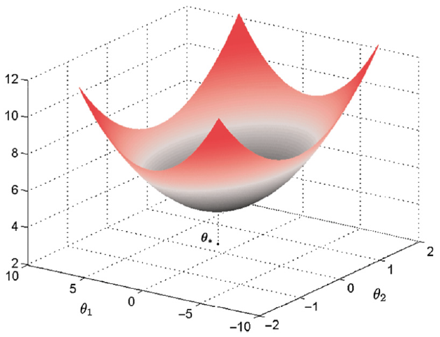
Fig. 2.1 Función de coste en el espacio de parámetros bidimensional.#
Suponga que en la iteración \(i-1\) el valor \(\boldsymbol{\theta}^{(i-1)}\) ha sido obtenido. Evaluando la función objetivo en el nuevo punto se obtiene
Si \(\mu_i\) es suficientemente pequeño, el nuevo punto se encuentra en un entorno cercano a \(\boldsymbol{\theta}^{(i-1)}\), lo que permite aproximar \(J(\cdot)\) mediante una expansión de Taylor de primer orden alrededor de \(\boldsymbol{\theta}^{(i-1)}\):
\[ J(\boldsymbol{\theta}^{(i-1)} + \mathbf{h}) \approx J(\boldsymbol{\theta}^{(i-1)}) + \nabla^{T} J(\boldsymbol{\theta}^{(i-1)})\, \mathbf{h}, \]donde \(\mathbf{h}\) es una perturbación pequeña.
En este caso,
Sustituyendo en la expresión anterior se obtiene
\[ J(\boldsymbol{\theta}^{(i)}) \approx J(\boldsymbol{\theta}^{(i-1)}) + \nabla^{T} J(\boldsymbol{\theta}^{(i-1)}) \big(\mu_i \Delta \boldsymbol{\theta}^{(i)}\big), \]o, de forma equivalente,
\[ J(\boldsymbol{\theta}^{(i)}) \approx J(\boldsymbol{\theta}^{(i-1)}) + \mu_i \cdot \nabla^{T} J(\boldsymbol{\theta}^{(i-1)}) \Delta \boldsymbol{\theta}^{(i)}. \]Esta aproximación describe el cambio local de la función objetivo como una función lineal del desplazamiento en el espacio de parámetros. El término \(\nabla^{T} J(\boldsymbol{\theta}^{(i-1)}) \Delta \boldsymbol{\theta}^{(i)}\) corresponde al producto interno entre el gradiente y la dirección de actualización, e indica si el valor de la función objetivo aumenta o disminuye.
Nótese que seleccionando la dirección tal que \(\nabla^{T}J(\boldsymbol{\theta}^{(i-1)})\Delta\boldsymbol{\theta}^{(i)}<0\), garantizará que \(J(\boldsymbol{\theta}^{(i-1)}+\mu_{i}\Delta\boldsymbol{\theta}^{(i)})<J(\boldsymbol{\theta}^{(i-1)})\). Tal selección de \(\Delta\boldsymbol{\theta}^{(i)}\) y \(\nabla J(\boldsymbol{\theta}^{(i-1)})\) debe formar un ángulo obtuso. Las curvas de nivel asociadas a \(J(\boldsymbol{\theta})\) pueden tomar cualquier forma, la cual va a depender de como está definido \(J(\boldsymbol{\theta})\).
\(J(\boldsymbol{\theta})\) se supone diferenciable, por lo tanto, las curvas de nivel o contornos deben ser suaves y aceptar un plano tangente en cualquier punto. Además, de los cursos de cálculo sabemos que el vector gradiente \(\nabla J(\boldsymbol{\theta})\) es perpendicular al plano tangente (recta tangente) a la correspondiente curva de nivel en el punto \(\boldsymbol{\theta}\). Nótese que seleccionando la dirección de búsqueda \(\Delta\boldsymbol{\theta}^{(i)}\) que forma un angulo obtuso con el gradiente, se coloca a \(\boldsymbol{\theta}^{(i-1)}+\mu_{i}\Delta\boldsymbol{\theta}^{(i)}\) en un punto sobre el contorno el cual corresponde a un valor menor que \(J(\boldsymbol{\theta})\).
Dos problemas surgen ahora:
Escoger la mejor dirección de búsqueda
Calcular que tan lejos es aceptable un movimiento a traves de esta dirección.

Fig. 2.2 El vector gradiente en un punto \(\boldsymbol{\theta}\) es perpendicular al plano tangente (línea punteada) en la curva de nivel que cruza \(\boldsymbol{\theta}\). La dirección de descenso forma un ángulo obtuso, \(\phi\), con el vector gradiente.#
Nótese que si \(\mu_{i}\|\Delta\boldsymbol{\theta}^{(i)}\|\) es demasiado grande, entonces el nuevo punto puede ser colocado en un contorno correspondiente a un valor mayor al del actual contorno.

Fig. 2.3 Las correspondientes curvas de nivel para la función de coste, en el plano bidimensional. Nótese que a medida que nos alejamos del valor óptimo, \(\boldsymbol{\theta}_{\star}\), los valores de \(c\) aumentan.#
Con el fin de analizar exclusivamente la dirección de búsqueda (1), se fija inicialmente \(\mu_i = 1\) y se consideran únicamente vectores de búsqueda unitarios \(\boldsymbol{z}\) tales que
De este modo, el problema se reduce a determinar la dirección unitaria que minimiza el producto interno con el gradiente:
Nótese que
Si \(\nabla^T J \cdot z\) es grande y positivo, \(J\) aumenta mucho.
Si \(\nabla^T J \cdot z\) es grande y negativo, \(J\) disminuye mucho.
Este planteamiento responde a la pregunta fundamental:
¿En qué dirección, manteniendo fija la longitud del desplazamiento, se logra la mayor disminución local de la función objetivo?
De álgebra lineal se sabe que, para cualquier vector no nulo \(\boldsymbol{a} \in \mathbb{R}^n\),
\[ \min_{\|\boldsymbol{z}\| = 1} \; \boldsymbol{a}^{T} \boldsymbol{z} = -\|\boldsymbol{a}\|, \]y que dicho mínimo se alcanza cuando
\[ \boldsymbol{z} = -\frac{\boldsymbol{a}}{\|\boldsymbol{a}\|}. \]
En efecto, queremos resolver:
\[ \min_{\|z\| = 1} \mathbf{a}^T z \]donde \(\mathbf{a} \in \mathbb{R}^n\) es un vector fijo no nulo.
Recordemos la identidad del producto escalar:
\[ \mathbf{a}^T z = \|\mathbf{a}\| \|z\| \cos \theta, \]donde \(\theta\) es el ángulo entre \(\mathbf{a}\) y \(z\).
Dado que \(\|z\| = 1\), la expresión se simplifica a:
Como \(\|\mathbf{a}\| > 0\) es constante, minimizar \(\mathbf{a}^T z\) equivale a minimizar \(\cos \theta\). El rango de la función coseno es
El valor mínimo \(\cos \theta = -1\) se alcanza cuando
Cuando \(\theta = \pi\), el vector \(z\) apunta en la dirección exactamente opuesta a \(\mathbf{a}\). Esto significa que existe un escalar \(\alpha < 0\) tal que
Calculamos la norma de \(z\)
Dado que \(\|z\| = 1\), tenemos
Como \(\alpha < 0\):
Sustituyendo \(\alpha\) en \(z = \alpha \mathbf{a}\):
Aplicación al gradiente. Tomando
\[ \boldsymbol{a} = \nabla J(\boldsymbol{\theta}^{(i-1)}), \]se concluye que la dirección unitaria que produce la mayor disminución local de \(J\) es
\[ \boldsymbol{z} = -\frac{\nabla J(\boldsymbol{\theta}^{(i-1)})} {\|\nabla J(\boldsymbol{\theta}^{(i-1)})\|}. \]Geométricamente:
El gradiente \(\nabla J\) apunta en la dirección de máximo crecimiento de \(J\).
El gradiente negativo apunta en la dirección de máximo descenso local.
La normalización únicamente fija la longitud del vector.
En la práctica, no es necesario normalizar la dirección de descenso, ya que el tamaño del paso está controlado por el parámetro \(\mu_i\). Por esta razón, se define directamente
\[ \Delta \boldsymbol{\theta}^{(i)} = -\nabla J(\boldsymbol{\theta}^{(i-1)}), \]lo que da lugar al método conocido como descenso por gradiente.
Sustituyendo esta elección en el producto interno se obtiene
Este valor es estrictamente negativo, excepto en puntos críticos donde el gradiente se anula. En consecuencia, para valores suficientemente pequeños de \(\mu_i\), la aproximación de Taylor garantiza que
\[ J(\boldsymbol{\theta}^{(i)}) < J(\boldsymbol{\theta}^{(i-1)}), \]lo que asegura una disminución del valor de la función objetivo en cada iteración.
Por lo tanto, para todos los vectores con norma Euclidiana 1, la dirección de descenso mas pronunciada coincide con la dirección del gradiente descendente, negativo, y la correspondiente actualización recursiva se convierte en
\[ \boldsymbol{\theta}^{(i)}=\boldsymbol{\theta}^{(i-1)}-\mu_{i}\nabla J(\boldsymbol{\theta}^{(i-1)}),\quad\text{Gradiente descendente}. \]donde
\(-\nabla J\!\left(\theta^{(i-1)}\right)\) representa la dirección de descenso.
\(\mu_i > 0\) es el tamaño del paso o learning rate.
La cantidad \(\|\nabla J(\theta^{(i-1)})\|^2\) aparece únicamente en el análisis teórico del descenso, al evaluar la variación de la función objetivo, y no forma parte de la actualización del algoritmo.

Fig. 2.4 Representación del gradiente negativo el cual conduce a la máxima disminución de la función de coste.#
La selección de \(\mu_{i}\) debe ser realizada de tal forma que garantice convergencia de la secuencia de minimización. Nótese que el algoritmo puede oscilar en torno al mínimo sin converger, si no seleccionamos la dirección correcta. La selección de \(\mu_{i}\) dependerá de la convergencia a cero del error entre \(\boldsymbol{\theta}^{(i)}\) y el mínimo real en forma de serie geométrica.
Ejercicio
Por ejemplo, para el caso de la función de coste del error cuadrático medio, la longitud de paso está dada por: \(0<\mu<2/\lambda_{\max}\), donde \(\lambda_{\max}\) el máximo eigenvalor de la matriz de covarianza \(\Sigma_{x}=\mathbb{E}[\boldsymbol{x}\boldsymbol{x}^{T}]\), donde \(J(\boldsymbol{\theta})=E[(y-\boldsymbol{\theta}^{T}\boldsymbol{x})^{2}]\) (ver Sección 5.3 [Theodoridis, 2020]).
2.2. Redes neuronales#
Introducción
Las redes neuronales son sistemas de aprendizaje compuestos por neuronas conectadas en capas que ajustan sus conexiones para aprender. Tras un período de 25 años desde su inicio, las redes neuronales se convirtieron en la norma en el aprendizaje automático. En un principio, dominaron durante una década, pero luego fueron superadas por máquinas de vectores de soporte.
Sin embargo, desde 2010, las redes neuronales profundas se han vuelto populares gracias a mejoras en la tecnología y la disponibilidad de grandes conjuntos de datos, impulsando el campo del aprendizaje automático.
2.3. El perceptrón#
Nuestro punto de partida será considerar el problema simple de una tarea de clasificación conformada por dos clases linealmente separables. En otras palabras, dado un conjunto de muestras de entrenamiento, \((y_{n}, \boldsymbol{x}_{n})\), \(n=1,2,\dots,N\), con \(y_{n}\in\{-1,+1\},~\boldsymbol{x}_{n}\in\mathbb{R}^{l}\), suponemos que existe un hiperplano
\[ \boldsymbol{\theta}_{\star}^{T}\boldsymbol{x}=0, \]tal que,
\[\begin{split} \begin{cases} \boldsymbol{\theta}_{\star}^{T}\boldsymbol{x}&>0,\quad\text{si}\quad\boldsymbol{x}\in\omega_{1}\\ \boldsymbol{\theta}_{\star}^{T}\boldsymbol{x}&<0,\quad\text{si}\quad\boldsymbol{x}\in\omega_{2} \end{cases} \end{split}\]En otras palabras, dicho hiperplano clasifica correctamente todos los puntos del conjunto de entrenamiento. Para simplificar, el término de sesgo del hiperplano ha sido absorbido en \(\boldsymbol{\theta}_{\star}\) después de extender la dimensionalidad del espacio de entrada en uno. El objetivo ahora es desarrollar un algoritmo que calcule iterativamente un hiperplano que clasifique correctamente todos los patrones de ambas clases. Para ello, se adopta una función de costo.
Sea \(\boldsymbol{\theta}\) la estimación del vector de parámetros desconocidos, disponible en la actual iteración. Entonces hay dos posibilidades. La primera es que todos los puntos estén clasificados correctamente; esto significa que se ha obtenido una solución. La otra alternativa es que \(\boldsymbol{\theta}\) clasifique correctamente algunos de los puntos y el resto estén mal clasificados.
Costo perceptrón
Sea \(\mathcal{Y}\) el conjunto de todas las muestras mal clasificadas. La función de costo, perceptrón se define como
donde
Nótese que la función la función de costo es no negativa. En efecto, dado que la suma es sobre los puntos mal clasificados, si \(\boldsymbol{x}_{n}\in\omega_{1}~(\omega_{2}),~\) entonces \(\boldsymbol{\theta}^{T}\boldsymbol{x}_{n}\leq (\geq)~0\), entregando así un producto \(-y_{n}\boldsymbol{\theta}^{T}\boldsymbol{x}_{n}\geq0\).
La función de costo es cero, si no existen puntos mal clasificados, esto es, \(\mathcal{Y}=\emptyset\). La función de costo perceptrón no es diferenciable en todos los puntos, es lineal por tramos. Si reescribimos \(J(\boldsymbol{\theta})\) en una forma ligeramente diferente:
Nótese que esta es una función lineal con respeto a \(\boldsymbol{\theta}\), siempre que el conjunto de puntos mal clasificados permanezca igual. Además, nótese que ligeros cambios del valor \(\boldsymbol{\theta}\) corresponden a cambios de posición del respectivo hiperplano. Como consecuencia, existirá un punto donde el número de muestras mal clasificadas en \(\mathcal{Y}\), repentinamente cambia; este es el tiempo donde una muestra en el conjunto de entrenamiento cambia su posición relativa con respecto a el hiperplano en movimiento, y en consecuencia, el conjunto \(\mathcal{Y}\) es modificado. Después de este cambio, el conjunto, \(J(\boldsymbol{\theta})\), corresponderá a una nueva función lineal.
El algoritmo perceptrón
A partir del método de subgradientes se puede verificar fácilmente que, iniciando desde un punto arbitrario, \(\boldsymbol{\theta}^{(0)}\), el siguiente método iterativo,
converge después de un número finito de pasos. La sucesión de parámetros \(\mu_{i}\) es seleccionada adecuadamente para garantizar convergencia.
Nótese que usando el método de subgradiente (ver apéndice) o gradiente descendente se tiene que
Otra versión del algoritmo considera una muestra por iteración en un esquema cíclico, hasta que el algoritmo converge. Denotemos por \(y_{(i)}\), \(\boldsymbol{x}_{i},~i\in\{1,2,\dots,N\}\) los pares de entrenamiento presentados al algoritmo en la iteración \(i\)-ésima. Entonces, la iteración de actualización se convierte en:
Esto es, partiendo de una estimación inicial de forma random, inicializando \(\boldsymbol{\theta}^{(0)}\) con algunos valores pequeños, testeamos cada una de las muestras, \(\boldsymbol{x}_{n},~n=1,2,\dots,N\). Cada vez que una muestra es mal clasificada, se toma acción por medio de la regla perceptrón para una corrección. En otro caso, ninguna acción es requerida.
Una vez que todas las muestras han sido consideradas, decimos que una
época (epoch)ha sido completada. Si no se obtiene convergencia, todas las muestras son reconsideradas en una segunda época, y así sucesivamente. La versión de este algoritmo es conocida como esquemapattern-by-pattern. Algunas veces también es referido como el algoritmo online. Nótese que el número total de datos muestrales es fijo, y que el algoritmo las considera en forma cíclica, época por época (epoch-by-epoch).
Observación
Después de un número finito de épocas, se garantiza que el algoritmo es convergente (convexidad de \(J\) y clases linealmente separables). Nótese que para obtener dicha convergencia, la sucesión \(\mu_{i}\) debe ser seleccionada apropiadamente. Sin embargo, para el caso del algoritmo perceptrón, la convergencia es garantizada, aun cuando \(\mu_{i}\) es una constante positiva, \(\mu_{i}=\mu>0\), usualmente tomado igual a uno.
La formulación en (2.1) es conocida también como la filosofía de aprendizaje
reward-punishment. Si la actual estimación es exitosa en la predicción de la clase del respectivo patrón, ninguna acción es tomada (reward), en otro caso, el algoritmo es obligado a realizar una actualización (punishment).
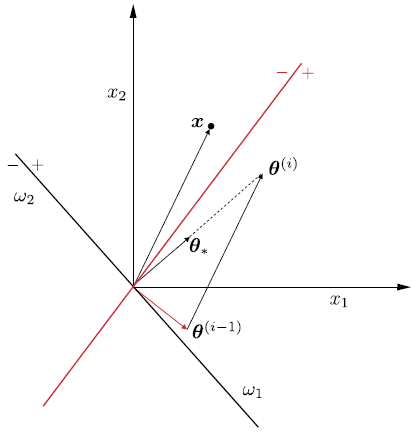
Fig. 2.5 El punto \(x\) está mal clasificado por la línea roja. La regla perceptrón gira el hiperplano hacia el punto \(x\), para intentar incluirlo en el lado correcto del nuevo hiperplano y clasificarlo correctamente.#
La Fig. 2.5 ofrece una interpretación geométrica de la regla del perceptrón. Supongamos que la muestra \(\boldsymbol{x}\) está mal clasificada por el hiperplano, \(\boldsymbol{\theta}^{(i-1)}\). Como sabemos, por geometría analítica, \(\boldsymbol{\theta}^{(i-1)}\) corresponde a un vector que es perpendicular al hiperplano que está definido por este vector. Como \(\boldsymbol{x}\) se encuentra en el lado \((-)\) del hiperplano y está mal clasificado, pertenece a la clase \(\omega_{1}\); asumiendo \(\mu = 1\), la corrección aplicada por el algoritmo es
\[ \boldsymbol{\theta}^{(i)}=\boldsymbol{\theta}^{(i-1)}+\boldsymbol{x}, \]y su efecto es girar el hiperplano en dirección a \(\boldsymbol{x}\) para colocarlo en el lado \((+)\) del nuevo hiperplano, que está definido por la estimación actualizada \(\boldsymbol{\theta^{(i)}}\). El algoritmo perceptrón en su modo de funcionamiento patrón por patrón (pattern-by-pattern) se resume en el siguiente algoritmo:
Algorithm 2.1 (Algoritmo perceptrón pattern-by-pattern)
Inicialización
Inicializar \(\boldsymbol{\theta}^{(0)}\); usualmente, de forma random, pequeño
Seleccionar \(\mu\); usualmente establecido como uno
\(i=1\)
Repeat Cada iteración corresponde a un epoch
counter = 0; Contador del número de actualizaciones por epoch
For \(n=1,2,\dots,N\) Do Para cada epoch, todas las muestras son presentadas una vez
If(\(y_{n}\boldsymbol{x}_{n}^{T}\leq0\)) Then
\(\boldsymbol{\theta}^{(i)}=\boldsymbol{\theta}^{(i-1)}+\mu y_{n}\boldsymbol{x}_{n}\)
\(i=i+1\)
counter = counter + 1
End For
Until counter = 0
Una vez que el algoritmo perceptrón se ha ejecutado y converge, tenemos los pesos, \(\theta_{i},~i = 1,2,\dots,l\), de las sinapsis de la neurona/perceptrón asociada, así como el término de sesgo \(\theta_{0}\). Ahora se pueden utilizar para clasificar patrones desconocidos. Las características \(x_{i}, i = 1, 2,\dots,l\), se aplican a los nodos de entrada. A su vez, cada característica se multiplica por la sinapsis respectiva (peso), y luego se añade el término de sesgo en su combinación lineal.
El resultado de esta operación pasa por una función no lineal, \(f\), conocida como función de activación (ver Activation function). Dependiendo de la forma de la no linealidad, se producen diferentes tipos de neuronas. La mas clásica conocida como neurona McCulloch-Pitts, la función de activación es la de Heaviside, es decir,
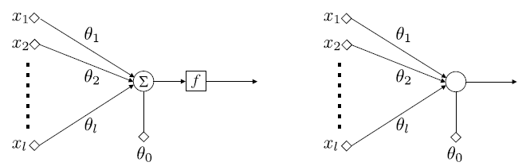
Fig. 2.6 Arquitectura básica de neuronas/perceptrones.#
En la arquitectura básica de neuronas/perceptrones, las características de entrada se aplican a los nodos de entrada y se ponderan por los respectivos pesos que definen las sinapsis. A continuación se añade el término de sesgo en su combinación lineal y el resultado es empujado a través de la no linealidad. En la neurona McCulloch-Pitts, la salida es 1 para los patrones de la clase \(\omega_{1}\) o 0 para la clase \(\omega_{2}\). La suma y la operación no lineal se unen para simplificar el gráfico.
Para las capas ocultas (
input layer), la función de activación tangente hiperbólica suele funcionar mejor que la sigmoidea logística. Tanto la funciónsigmoidcomotanhpueden hacer que el modelo sea mássusceptible a los problemas durante el entrenamiento, a través del llamado problema de los gradientes desvanecientes. Los modelos modernos de redes neuronales con arquitecturas comunes, comoMLPyCNN, harán uso de la función de activaciónReLU, o extensiones.Las redes recurrentes suelen utilizar funciones de activación
tanhosigmoid, o incluso ambas. Por ejemplo, la LSTM suele utilizar la activaciónsigmoidpara las conexiones recurrentes y la activacióntanhpara la salida.

Fig. 2.8 Selección de función de activación para hidden layers. (Fuente [Brownlee and Mastery, 2017]).#
Si su problema es de regresión, debería utilizar una función de activación lineal en el
output layer. Si su problema es de clasificación, el modelo predice la probabilidad de pertenencia a una clase, que se puede convertir en una etiqueta de clase mediante redondeo (para sigmoid) oargmax(para softmax). Usualmente,softmaxes usada en clasificación múltiple cuando las clases son mutuamente excluyentes en caso contrario puede usar la función de activaciónsigmoidpara cada output.
2.4. Redes Totalmente Conectadas#
Para resumir de manera más formal el tipo de operaciones que tienen lugar en una red totalmente conectada, centrémonos en, por ejemplo, la capa \(r\) de una red neuronal multicapa y supongamos que está formada por \(k_{r}\) neuronas. El vector de entrada a esta capa está formado por las salidas de los nodos de la capa anterior, que se denomina \(\boldsymbol{y}^{r-1}\).
Sea \(\boldsymbol{\theta}_{j}^{r}\) el vector de los pesos sinápticos, incluido el término de sesgo, asociado a la neurona \(j\) de la capa \(r\), donde \(j = 1,2,\dots, k_{r}\). La dimensión respectiva de este vector es \(k_{r-1} + 1\), donde \(k_{r-1}\) es el número de neuronas de la capa anterior, \(r-1\), y el aumento en 1 representa el término de sesgo. Entonces las operaciones realizadas, antes de la no linealidad, son los productos internos
Colocando todos los valores de salida en un vector \(\boldsymbol{z}^{r}=[z_{1}^{r}, z_{2}^{r},\dots,z_{k_{r}}^{r}]^{T}\), y agrupando todos los vectores sinápticos como filas, una debajo de la otra, en una matriz, podemos escribir colectivamente
El vector de las salidas de la \(r\) th capa oculta, después de empujar cada \(z_{i}^{r}\) a través de la no linealidad \(f\), está finalmente dado por
La siguiente figura describe como es creada la \(j\)-ésima capa de la red neuronal full conectada

Fig. 2.9 \(j\)-ésimo elemento de la capa \(r\) de la red totalmente conectada.#
Observación
La notación anterior significa que \(f\) actúa sobre cada uno de los respectivos componentes del vector, individualmente, y la extensión del vector en uno es para dar cuenta de los términos de sesgo en la práctica estándar. Para redes grandes, con muchas capas y muchos nodos por capa, este tipo de conectividad resulta ser muy costoso en términos del número de parámetros (pesos), que es del orden de \(k_{r}k_{r-1}\).
Por ejemplo, si \(k_{r-1} = 1000\) y \(k_{r} = 1000\), esto equivale a un orden de 1 millón de parámetros. Tenga en cuenta que este número es la contribución de los parámetros de una sola de las capas. Sin embargo, un gran número de parámetros hace que una red sea vulnerable al sobreajuste, cuando se trata de entrenamiento
Las técnicas de reparto de pesos consisten en compartir un conjunto de parámetros entre varias conexiones mediante restricciones específicas. Las redes neuronales recurrentes y convolucionales aplican este principio; en estas últimas, las convoluciones reemplazan al producto interno, reduciendo significativamente el número de parámetros.
2.5. El Algoritmo De Backpropagation#
Una red neuronal considera una función paramétrica no lineal, \(\hat{y} = f_{\boldsymbol{\theta}}(\boldsymbol{x})\), donde \(\boldsymbol{\theta}\) representa todos los pesos/sesgo presentes en la red. Por lo tanto, el entrenamiento de una red neuronal no parece ser diferente del entrenamiento de cualquier otro modelo de predicción paramétrica.
Todo lo que se necesita es (a) un conjunto de muestras de entrenamiento, (b) una función de pérdida \(\mathcal{L}(y, \hat{y})\), y (c) un esquema iterativo, por ejemplo, el gradiente descendente, para realizar la optimización de la función de coste asociada (pérdida empírica).
La dificultad del entrenamiento de las redes neuronales radica en su estructura multicapa que complica el cálculo de los gradientes, que intervienen en la optimización. Además, la neurona McCulloch-Pitts se basa en la función de activación discontinua Heaviside no diferenciable.
Neurona sigmoidea logística: Una posibilidad es adoptar la función sigmoidea logística, es decir,
Nótese que cuanto mayor sea el valor del parámetro \(a\), la gráfica correspondiente se acerca más a la de la función de Heaviside (ver Fig. 2.10).
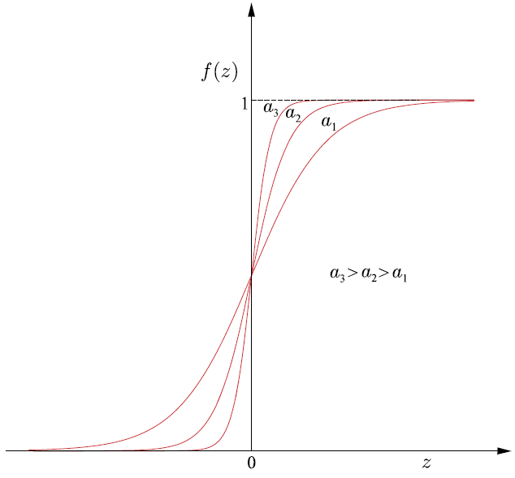
Fig. 2.10 Función sigmoidea logística para diferentes valores del parámetro \(a\).#
Otra posibilidad sería utilizar la función,
\[ f(z)=a\tanh\left(\frac{cz}{2}\right), \]donde \(c\) y \(a\) son parámetros de control. El gráfico de esta función se muestra en la Fig. 2.11. Nótese que a diferencia de la sigmoidea logística, esta es una función no simétrica, es decir, \(f(-z)=-f(z)\). Ambas son también conocidas como funciones de reducción, porque limitan la salida a un rango finito de valores.
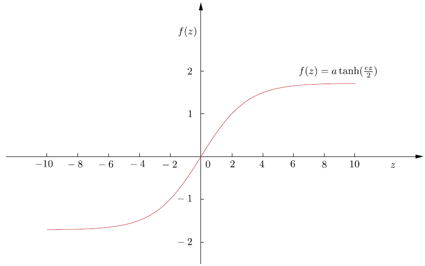
Fig. 2.11 Función de reducción de la tangente hiperbólica para \(a = 1.7\) y \(c = 4/3\).#
Recordemos que la regla de actualización del algoritmo gradiente descendente, en su versión unidimensional se convierte en
\[ \theta(new)=\theta(old)-\mu\left.\frac{d J}{d\theta}\right|_{\theta(old)}, \]y las iteraciones parten de un punto inicial arbitrario, \(\theta^{(0)}\).
Si en la iteración actual el algoritmo está digamos, en el punto \(\theta(old) = \theta_{1}\), entonces se moverá hacia el mínimo local, \(\theta_{l}\). Esto se debe a que la derivada del coste en \(\theta_{1}\) es igual a la tangente \(\phi_{1}\) (ver Fig. 2.12), que es negativa (el ángulo es obtuso) y la actualización, \(\theta(new)\), se moverá a la derecha, hacia el mínimo local, \(\theta_{l}\).
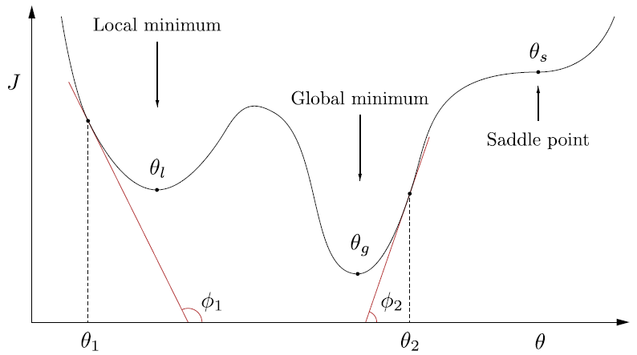
Fig. 2.12 Función no convexa global, con mínimos locales y puntos de silla.#
Observación
La elección del tamaño de paso \(\mu\) es clave para la convergencia. En espacios multidimensionales, abundan los mínimos locales, pero converger a uno profundo y cercano al mínimo global puede ser aceptable. Para evitarlos, pueden emplearse optimizadores como Adam, RMSprop o AdaGrad, explorar otras funciones de coste o aplicar regularización, ya que modelos muy complejos son más propensos a caer en mínimos locales.
2.6. El Esquema De Backpropagation Para Gradiente Descendente#
Habiendo adoptado una función de activación diferenciable, estamos listos para proceder a desarrollar el esquema iterativo de gradiente descendente para la minimización de la función de coste. Formularemos la tarea en un marco general.
Sea \((\boldsymbol{y}_{n}, \boldsymbol{x}_{n}), n = 1, 2,\dots, N\), el conjunto de muestras de entrenamiento. Nótese que hemos asumido múltiples variables output, como vectores. Suponemos que la red consta de \(L\) capas, \(L-1\) capas ocultas y una capa de salida. Cada capa consta de \(k_{r}, r = 1, 2,\dots, L\), neuronas. Así, los vectores de salida (objetivo/deseado) son
Para ciertas derivaciones matemáticas, también denotamos el número de nodos de entrada como \(k_{0}\); es decir, \(k_{0} = l\), donde \(l\) es la dimensionalidad del espacio de características de entrada.
Sea \(\boldsymbol{\theta}_{j}^{r}\) el vector de los pesos sinápticos asociados a la \(j\)-th neurona de la \(r\)-th capa, con \(j = 1, 2,\dots, k_{r}\) y \(r = 1, 2,\dots,L\), donde el término de sesgo se incluye en \(\boldsymbol{\theta}_{j}^{r}\), es decir,
Los pesos sinápticos en la capa \(r\) enlazan la neurona respectiva con todas las neuronas de la capa \(k_{r-1}\) (véase la Fig. 2.13). El paso iterativo básico para el esquema de gradiente descendente se escribe como
El parámetro \(\mu\) es el tamaño de paso definido por el usuario (también puede depender de la iteración) y \(J\) denota la función de coste.

Fig. 2.13 Enlaces y las variables asociadas de la \(j\) th neurona en la \(r\) th capa. \(y_{k}^{r-1}\) es la salida de la \(k\) th neurona de la \((r - 1)\) th capa y \(\theta_{jk}^{r}\) es el peso respectivo que conecta estas dos neuronas.#
Las ecuaciones de actualización (2.3) comprenden el par del esquema de gradiente descendente para la optimización. Como se ha dicho anteriormente, la dificultad de las redes neuronales feed-forward surge de su estructura multicapa. Para calcular los gradientes en la Ecuación (2.3), para todas las neuronas, en todas las capas, se deben seguir dos pasos en su cálculo
Forward computations: Para un vector de entrada dado \(\boldsymbol{x}_{n}, n = 1, 2,\dots, N\), se utilizan las estimaciones actuales de los parámetros (pesos sinápticos) (\(\boldsymbol{\theta}_{j}^{r}(old)\)) y calcula todas las salidas de todas las neuronas en todas las capas, denotadas como \(y_{nj}^{r}\); en la Fig. 2.13, se ha suprimido el índice \(n\) para no afectar la notación.Backward computations: Utilizando las salidas neuronales calculadas anteriormente junto con los valores objetivos conocidos, \(y_{nk}\), de la capa de salida, se calculan los gradientes de la función de coste. Esto implica \(L\) pasos, es decir, tantos como el número de capas. La secuencia de los pasos algorítmicos se indica a continuación:Calcular el gradiente de la función de coste con respecto a los parámetros de las neuronas de la última capa, es decir, \(\partial J/\partial\boldsymbol{\theta}_{j}^{L}, j = 1, 2,\dots, k_{L}\).
For \(r = L-1\) to \(1\), Do
Calcular los gradientes con respecto a los parámetros asociados a las neuronas de la \(r\) th capa, es decir, \(\partial J/\partial\boldsymbol{\theta}_{k}^{r}, k= 1, 2,\dots, k_{r}\) basado en todos los gradientes \(\partial J/\partial\boldsymbol{\theta}_{j}^{r+1}, j= 1, 2,\dots, k_{r+1}\), con respecto a los parámetros de la capa \(r + 1\) que se han calculado en el paso anterior.
End For
Ejemplo
Analicemos un ejemplo concreto de forward computations, seguido de un enfoque backward computations. El ejemplo de entrenamiento será (\(x=2.1\), \(y=4\)), el peso inicial será \(w:=\theta_{1}=1\), el sesgo será \(b:=\theta_{0}=0\) y \(\textsf{Loss}=L\). \(\hat{y}\) representa la salida de la neurona y el valor predicho, mientras que la pérdida se refiere a la pérdida por error cuadrático
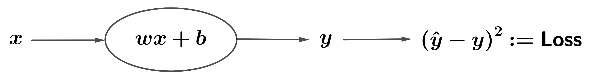
Fig. 2.14 Ejemplo de red neuronal para backpropagation#
Forward computaion:

Backward computation: Ahora podemos retroceder (backpropagation) y calcular las derivadas parciales aplicando la regla de la cadena para obtener
Luego, actualizamos los parámetros en la dirección opuesta al gradiente para disminuir la pérdida, con una tasa de aprendizaje de \(\textsf{lr}:=\mu=0.01\)
Para evaluar el rendimiento de nuestros parámetros ajustados, realizaremos una pasada adicional
La pérdida total disminuyó de 3.61 a 2.87, lo que representa una reducción de 0.74. ¡La pérdida ha bajado!
2.7. Entrenamiento de MLP#
Observación
Los pesos de una red neuronal se ajustan mediante algoritmos de optimización basados en gradiente, como el gradiente descendente estocástico, que minimiza iterativamente la función de pérdida \(L\). Para tareas de regresión, se emplean el error cuadrático medio (MSE) y el error absoluto medio (MAE); para clasificación, se utilizan pérdidas logarítmicas binarias o categóricas.
El algoritmo backpropagation se comprende a través de grafos computacionales, útiles para calcular en redes neuronales. En una red simple con una capa oculta de dos neuronas con activación sigmoidea y salida lineal, alimentada por dos entradas \([y_1, y_2]\), los pesos se distribuyen en los bordes de la red.

La Fig. 2.16 ilustra este proceso mediante un grafo computacional para la entrada \([-1, 2]\), generando salidas intermedias \(p_i\). En particular, \(p_7\) y \(p_8\) corresponden a las salidas de las neuronas ocultas \(g_1\) y \(g_2\). Durante este paso también se calcula la función de pérdida \(L\) usada en el entrenamiento.

En el backpropagation, el recorrido inverso del grafo (backward pass) calcula las derivadas parciales entre nodos conectados. Siguiendo la regla de la cadena, la derivada de la pérdida respecto a un peso es el producto de las derivadas a lo largo de cada camino que los une, y si hay varios caminos, se suman. Este enfoque gráfico sustenta las bibliotecas modernas de deep learning para implementar los pasos forward y backward (ver Fig. 2.17)

{kind=link}
{kind=link}
{kind=link}
{kind=link}
{kind=link}
{kind=link}
{kind=link}
Las derivadas parciales de la función de pérdida con respecto a los pesos se obtienen aplicando la regla de la cadena:
Durante el entrenamiento, los pesos suelen inicializarse aleatoriamente, ya sea con una distribución uniforme en un rango como \([-1, 1]\) o con una distribución normal de media cero y varianza unitaria, existiendo variantes que aceleran la convergencia.
En este ejemplo, se asume inicialización uniforme, obteniendo: \(w_1 = -0.33,\; w_2 = -0.33,\; w_3 = 0.57,\; w_4 = -0.01,\; w_5 = 0.07,\; w_6 = 0.82\). Con estos valores, se realizan los pasos forward y backward sobre el grafo computacional, mostrando en azul los resultados del forward y en rojo los gradientes del backward. El valor real de la variable objetivo se fija en \(y = 1\).
Una vez calculados los gradientes a lo largo de las aristas, las derivadas parciales con respecto a los pesos no son más que una aplicación de la regla de la cadena, de la que ya hemos hablado. Los valores de las derivadas parciales son los siguientes:
El siguiente paso es actualizar los pesos mediante gradiente descendente. Con tasa de aprendizaje \(\alpha = 0.01\):
El resto de pesos se actualizan con la misma fórmula. Este proceso se repite varias veces; el número de actualizaciones se denomina número de épocas. Generalmente, un criterio de tolerancia sobre el cambio en la función de pérdida controla cuándo detener el entrenamiento.
Para determinar los pesos, se combina backpropagation con un optimizador basado en gradiente. Bibliotecas como TensorFlow, Theano o CNTK implementan gráficos computacionales que entrenan redes neuronales de cualquier arquitectura, ejecutando operaciones matriciales y aprovechando GPU para acelerar el cálculo.
Observación
El backpropagation aplica la regla de la cadena para derivadas, comenzando por la última capa (salida), donde el cálculo del gradiente es directo: es la derivada de la función de pérdida respecto a la salida, sin depender de capas posteriores. Luego, el algoritmo retrocede capa por capa, propagando gradientes a través de funciones anidadas hasta las capas iniciales.
En efecto, centrémonos en la salida \(y_{k}^{r}\) de la neurona \(k\) en la capa \(r\). Entonces tenemos
\[ y_{k}^{r}=f(\boldsymbol{\theta}_{k}^{r^T}\boldsymbol{y}^{r-1}),\quad k=1,2,\dots, k_{r}, \]donde \(\boldsymbol{y}^{r-1}\) es el vector (ampliado) que comprende todas las salidas de la capa anterior, \(r-1\), y \(f\) denota la no-linealidad.
De acuerdo con lo anterior, la salida de la \(j\)-th neurona en la siguiente capa viene dada por
\[\begin{split} y_{j}^{r+1}=f(\boldsymbol{\theta}_{j}^{r+1^T}\boldsymbol{y}^{r})= f\left(\boldsymbol{\theta}_{j}^{r+1^{T}} \begin{bmatrix} 1\\ f(\Theta^{r}\boldsymbol{y}^{r-1}) \end{bmatrix} \right)= f\left(\boldsymbol{\theta}_{j}^{r+1^{T}} \begin{bmatrix} 1\\ f(\boldsymbol{y}^{r}) \end{bmatrix} \right), \end{split}\]donde \(\Theta^{r}:=[\boldsymbol{\theta}_{1}^{r}, \boldsymbol{\theta}_{2}^{r},\dots,\boldsymbol{\theta}_{k_{r}}]^{T}\) denota la matriz cuyas columnas corresponden al vector de pesos en el layer \(r\).
Nótese que obtuvimos evaluación de “una función interna bajo una función externa”. Claramente, esto continúa a medida que avanzamos en la jerarquía. Esta estructura de evaluación de funciones internas por funciones externas, es el subproducto de la naturaleza multicapa de las redes neuronales, la cual es una operación altamente no lineal, que da lugar a la dificultad de calcular los gradientes, a diferencia de otros modelos, como por ejemplo SVM.
Sin embargo, se puede observar fácilmente que el cálculo de los gradientes con respecto a los parámetros que definen la
capa de salidano plantea ninguna dificultad. En efecto, la salida de la \(j\)-th neurona de la última capa (que es en realidad la respectiva estimación de salida actual) se escribe como:
Dado que \(\boldsymbol{y}^{L-1}\) es conocido, después de los cálculos durante el paso adelante (
forward computaion), tomando la derivada con respecto a \(\boldsymbol{\theta}_{j}^{L}\) es sencillo; no hay ninguna operación de función sobre función. Por esto es que empezamos por la capa superior y luego nos movemos hacia atrás. Debido a su importancia histórica, se dará la derivación completa del algoritmo backpropagation.
Para la derivación detallada del algoritmo backpropagation, se adopta como ejemplo la función de pérdida del error cuadrático, es decir
(2.4)#\[ J(\boldsymbol{\theta})=\sum_{n=1}^{N}J_{n}(\boldsymbol{\theta})\quad\text{y}\quad J_{n}(\boldsymbol{\theta})=\frac{1}{2}\sum_{k=1}^{k_{L}}(\hat{y}_{nk}-y_{nk})^{2}, \]donde \(\hat{y}_{nk},~k=1,2,\dots,k_{L}\), son las estimaciones proporcionadas en los correspondientes nodos de salida de la red. Las consideraremos como los elementos de un vector correspondiente, \(\hat{\boldsymbol{y}}_{n}\).
2.8. Cálculo de gradientes#
Sea \(z_{nj}^{r}\) la salida del combinador lineal de la \(j\)-th neurona en la capa \(r\) en el instante de tiempo \(n\), cuando se aplica el patrón \(\boldsymbol{x}_{n}\) en los nodos de entrada (véase la Fig. 2.13). Entonces, para \(n, j\) fijos, podemos escribir
(2.5)#\[ z_{nj}^{r}=\sum_{m=1}^{k_{r-1}}\theta_{jm}^{r}y_{nm}^{r-1}+\theta_{j0}^{r}=\sum_{m=0}^{k_{r-1}}\theta_{jm}^{r}y_{nm}^{r-1}=\boldsymbol{\theta}_{j}^{r^{T}}\boldsymbol{y}_{n}^{r-1}, \]donde por definición
\[ \boldsymbol{y}_{n}^{r-1}:=[1, y_{n1}^{r-1},\dots, y_{nk_{r-1}}^{r-1}]^{T}, \]y \(y_{n0}^{r}\equiv 1,~\forall~r, n\) y \(\theta_{j}^{r}\) ha sido definido en la Ecuación (2.2).
Para las neuronas de la capa de salida \(r=L,~y_{nm}^{L}=\hat{y}_{nm},~m=1,2,\dots, k_{L}\), y para \(r=1\), tenemos \(y_{nm}^{1}=x_{nm},~m=1,2,\dots, k_{1}\); esto es, \(y_{nm}^{1}\) se fija igual a los valores de las características de entrada.
Por lo tanto, teniendo en cuenta que \(z_{j}^{r}=\boldsymbol{\theta}_{j}^{rT}\boldsymbol{y}^{r-1},~j=1,2,\dots,k_{r}\) y \(\hat{y}_{j}:=y_{j}^{r}=f(\boldsymbol{\theta}_{j}^{r^{T}}\boldsymbol{y}^{r-1})=f(z_{j}^{r})\), con base en la Ecuación (2.4) podemos escribir las derivadas parciales
Definamos
Entonces la Ecuación (2.3) puede escribirse como
2.9. Cálculo de \(\delta_{nj}^{r}\)#
Este es el cálculo principal del algoritmo backpropagation. Para el cálculo de los gradientes, \(\delta_{nj}^{r}\), se comienza en la última capa, \(r = L\), y se procede hacia atrás, hacia \(r = 1\); esta “filosofía” justifica el nombre dado al algoritmo.
\(r=L\): Tenemos que
\[ \delta_{nj}^{L}:=\frac{\partial J_{n}}{\partial z_{nj}^{L}}. \]Para la función de pérdida del error al cuadrado,
\[ J_{n}=\frac{1}{2}\sum_{k=1}^{k_{L}}\left(\hat{y}_{nk}-y_{nk}\right)^{2}=\frac{1}{2}\sum_{k=1}^{k_{L}}\left(f(z_{nk}^{L})-y_{nk}\right)^{2}. \]Por lo tanto,
(2.7)#\[\begin{split} \begin{align*} \delta_{nj}^{L}=\frac{\partial}{\partial z_{nj}^{L}}\left(\frac{1}{2}\sum_{k=1}^{k_{L}}\left(f(z_{nk}^{L})-y_{nk}\right)^{2}\right)&=(f(z_{nj}^{L})-y_{nj})f'(z_{nj}^{L})\\ &=(\hat{y}_{nj}-y_{nj})f'(z_{nj}^{L})=e_{nj}f'(z_{nj}^{L}), \end{align*} \end{split}\]donde \(j=1,2,\dots, k_{L}\), \(f'\) denota la derivada de \(f\) y \(e_{nj}\) es el error asociado con el \(j\)-th output en el tiempo \(n\). Nótese que para el último layer, el cálculo del gradiente, \(\delta_{nj}^{L}\) es sencillo.
\(r<L\): Debido a la dependencia sucesiva entre las capas, el valor de \(z_{nj}^{r-1}\) influye en todos los valores \(z_{nk}^{r},~k = 1, 2,\dots, k_{r}\), de la capa siguiente. Empleando la regla de la cadena para la diferenciación, obtenemos, para \(r=L, L-1,\dots, 2\):
(2.8)#\[ \delta_{nj}^{r-1}=\frac{\partial J_{n}}{\partial z_{nj}^{r-1}}=\sum_{k=1}^{k_{r}}\frac{\partial J_{n}}{\partial z_{nk}^{r}}\frac{\partial z_{nk}^{r}}{\partial z_{nj}^{r-1}}, \]o
(2.9)#\[ \delta_{nj}^{r-1}=\sum_{k=1}^{k_{r}}\delta_{nk}^{r}\frac{\partial z_{nk}^{r}}{\partial z_{nj}^{r-1}}. \]Además, usando la Ecuación (2.5) se tiene,
\[ \frac{\partial z_{nk}^{r}}{\partial z_{nj}^{r-1}}=\frac{\partial}{\partial z_{nj}^{r-1}}\left(\sum_{m=0}^{k_{r-1}}\theta_{km}^{r}y_{nm}^{r-1}\right), \]donde \(\textcolor{blue}{y_{nm}^{r-1}=f(z_{nm}^{r-1})}=f(\boldsymbol{\theta}_{m}^{r-1^{T}}\boldsymbol{y}_{n}^{r-2})\). Entonces,
\[ \frac{\partial z_{nk}^{r}}{\partial z_{nj}^{r-1}}=\theta_{kj}^{r}f'(z_{nj}^{r-1}), \]y combinando las Ecuaciones (2.8) y (2.9), obtenemos la regla recursiva
\[ \delta_{nj}^{r-1}=\left(\sum_{k=1}^{k_{r}}\delta_{nk}^{r}\theta_{kj}^{r}\right)f'(z_{nj}^{r-1}). \]
Manteniendo la misma notación en la Ecuación (2.7), definimos
\[ e_{nj}^{r-1}:=\sum_{k=1}^{k_{r}}\delta_{nk}^{r}\theta_{kj}^{r}, \]y finalmente obtenemos,
(2.10)#\[ \delta_{nj}^{r-1}=e_{nj}^{r-1}f'(z_{nj}^{r-1}). \]
El único cálculo que queda es la derivada de \(f\). Para el caso de la función sigmoidea logística se demuestra fácilmente que es igual a (
verifíquelo)
La derivación se ha completado y el esquema backpropagation neural network se resume en el siguiente algoritmo
Algorithm 2.2 (Algoritmo Backpropagation Gradiente Descendente)
Inicialización
Inicializar todos los pesos y sesgos sinápticos al azar con valores pequeños, pero no muy pequeños.
Seleccione el tamaño del paso \(\mu\).
Fije \(y_{nj}^{1}=x_{nj},\quad j=1,2,\dots,k_{1}:=l,\quad n=1,2,\dots,N\)
Repeat Cada repetición completa un epoch
For \(n=1,2,\dots,N\) Do
For \(r=1,2,\dots,L\) Do Cálculo Forward
For \(j=1,2,\dots,k_{r}\) Do
Calcule \(z_{nj}^{r}\) a partir de la Ecuación (2.5) Calcule \(y_{nj}^{r}=f(z_{nj}^{r})\)
End For
End For
For \(j = 1, 2,\dots, k_{L}\), Do; Cálculo Backward (output layer)
Calcule \(\delta_{nj}^{L}\) a partir de la Ecuación (2.10)
End For
For \(r=L, L-1,\dots, 2\), Do; Cálculo Backward (hidden layers)
For \(j=1,2,\dots, k_{r}\), Do
Calcule \(\delta_{nj}^{r-1}\) a partir de la Ecuación (2.10)
End For
End For
End For
For \(r=1,2,\dots,L\), Do: Actualice los pesos
For \(j=1,2,\dots,k_{r}\), Do
Calcule \(\Delta\boldsymbol{\theta}_{j}^{r}\) a partir de la Ecuación (2.6)
\(\boldsymbol{\theta}_{j}^{r}=\boldsymbol{\theta}_{j}^{r}+\Delta\boldsymbol{\theta}_{j}^{r}\)
End For
End For
Until Un criterio de parada se cumpla.
El algoritmo de backpropagation puede reivindicar una serie de padres. La popularización del algoritmo se asocia con el artículo clásico [Rumelhart et al., 1986], donde se proporciona la derivación del algoritmo. La idea de backpropagation también aparece en [Bryson Jr et al., 1963] en el contexto del control óptimo.
Existen diferentes variaciones del algoritmo backpropagation, tales como: Gradiende descendente con término de momento, Algoritmo de momentos de Nesterov’s, Algoritmo AdaGrad, RMSProp con momento de Nesterov, Algortimo de estimación de momentos adaptativo los cuales pueden ser utlizados para resolver la tarea de optimización (ver [Theodoridis, 2020]).
2.10. Tuning de Redes Neuronales#
Profundizaremos en la mecánica del Perceptrón Multicapa (MLP) empleando el
MLPClassifier()en el conjunto de datostwo_moonsque se utilizó anteriormente en esta sección
from sklearn.neural_network import MLPClassifier
from sklearn.datasets import make_moons
from sklearn.model_selection import train_test_split
import mglearn
import matplotlib.pyplot as plt
X, y = make_moons(n_samples=100, noise=0.25, random_state=3)
X_train, X_test, y_train, y_test = train_test_split(X, y, stratify=y, random_state=42)
mlp = MLPClassifier(solver='adam', random_state=0, max_iter=10000).fit(X_train, y_train)
adamOptimizer:adames un acrónimo de Adaptive Moment Estimation y es uno de los algoritmos de optimización más populares y efectivos utilizados en el entrenamiento de redes neuronales (ver [Kingma and Ba, 2014]). Es una variante avanzada del gradiente descendente que combina las ideas de los métodos de momentum y RMSProp para adaptarse mejor a diferentes problemas de optimización.
Características de Adam
Adaptative Learning Rate: Calcula tasas de aprendizaje adaptativas para cada parámetro utilizando estimaciones de primer y segundo orden de los momentos (media y varianza) de los gradientes.
Momentum:Utiliza el concepto de momentum para acumular una media móvil exponencial de los gradientes pasados (primer momento) y una media móvil exponencial de los cuadrados de los gradientes pasados (segundo momento).
mglearn.plots.plot_2d_separator(mlp, X_train, fill=True, alpha=.3)
mglearn.discrete_scatter(X_train[:, 0], X_train[:, 1], y_train)
plt.xlabel("Feature 0");
plt.ylabel("Feature 1");

Evidentemente, la red neuronal ha adquirido un límite de decisión decisivamente no lineal pero relativamente gradual
mlp = MLPClassifier(solver='lbfgs', random_state=0, max_iter=400, hidden_layer_sizes=[10])
Se empleó el algoritmo
'lbfgs'(ver Broyden–Fletcher–Goldfarb–Shanno algorithm (L-BFGS), optimizador de la familia de los métodos cuasi-Newton.). En particular, el MLP emplea 100 nodos ocultos por defecto, un número considerable para este conjunto de datos compacto. Sin embargo, incluso con un número reducido de nodos, se puede lograr un resultado satisfactorio
Optimizador L-BFGS
L-BFGS es una variante del algoritmo BFGS, que es un método de optimización de segundo orden. A diferencia de los métodos de primer orden, que utilizan únicamente el gradiente de la función de pérdida, los métodos de segundo orden también utilizan la información de la segunda derivada (la matriz Hessiana) para mejorar la dirección de los pasos de actualización. L-BFGS ajusta internamente las tasas de aprendizaje basadas en la información de segundo orden.
mlp.fit(X_train, y_train)
MLPClassifier(hidden_layer_sizes=[10], max_iter=400, random_state=0,
solver='lbfgs')In a Jupyter environment, please rerun this cell to show the HTML representation or trust the notebook. On GitHub, the HTML representation is unable to render, please try loading this page with nbviewer.org.
Parameters
| hidden_layer_sizes | [10] | |
| activation | 'relu' | |
| solver | 'lbfgs' | |
| alpha | 0.0001 | |
| batch_size | 'auto' | |
| learning_rate | 'constant' | |
| learning_rate_init | 0.001 | |
| power_t | 0.5 | |
| max_iter | 400 | |
| shuffle | True | |
| random_state | 0 | |
| tol | 0.0001 | |
| verbose | False | |
| warm_start | False | |
| momentum | 0.9 | |
| nesterovs_momentum | True | |
| early_stopping | False | |
| validation_fraction | 0.1 | |
| beta_1 | 0.9 | |
| beta_2 | 0.999 | |
| epsilon | 1e-08 | |
| n_iter_no_change | 10 | |
| max_fun | 15000 |
mglearn.plots.plot_2d_separator(mlp, X_train, fill=True, alpha=.3)
mglearn.discrete_scatter(X_train[:, 0], X_train[:, 1], y_train)
plt.xlabel("Feature 0");
plt.ylabel("Feature 1");
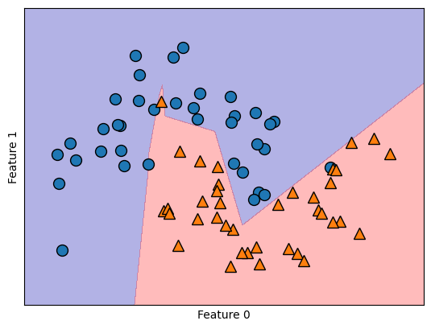
Al reducir las unidades ocultas a 10 hace que el límite de decisión tenga un aspecto algo irregular. La no linealidad por defecto empleada es la
"relu"
import numpy as np
line = np.linspace(-3, 3, 100)
plt.plot(line, np.tanh(line), label="tanh")
plt.plot(line, np.maximum(line, 0), label="relu")
plt.legend(loc="best")
plt.xlabel("x")
plt.ylabel("relu(x), tanh(x)");
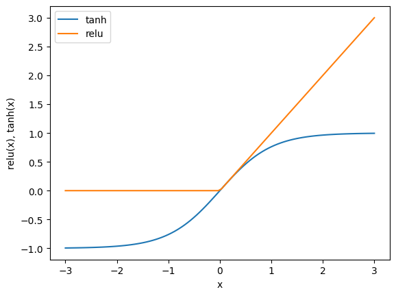
En el caso de una sola capa oculta, esto implica que la función de decisión comprende 10 segmentos de línea recta. Para conseguir un límite de decisión más gradual, las alternativas incluyen aumentar las unidades ocultas, introducir una segunda capa oculta o emplear la no linealidad
"tanh".
Utilizando dos capas ocultas, con 10 unidades cada una
mlp = MLPClassifier(solver='lbfgs', random_state=0, hidden_layer_sizes=[10, 10])
mlp.fit(X_train, y_train)
MLPClassifier(hidden_layer_sizes=[10, 10], random_state=0, solver='lbfgs')In a Jupyter environment, please rerun this cell to show the HTML representation or trust the notebook.
On GitHub, the HTML representation is unable to render, please try loading this page with nbviewer.org.
Parameters
| hidden_layer_sizes | [10, 10] | |
| activation | 'relu' | |
| solver | 'lbfgs' | |
| alpha | 0.0001 | |
| batch_size | 'auto' | |
| learning_rate | 'constant' | |
| learning_rate_init | 0.001 | |
| power_t | 0.5 | |
| max_iter | 200 | |
| shuffle | True | |
| random_state | 0 | |
| tol | 0.0001 | |
| verbose | False | |
| warm_start | False | |
| momentum | 0.9 | |
| nesterovs_momentum | True | |
| early_stopping | False | |
| validation_fraction | 0.1 | |
| beta_1 | 0.9 | |
| beta_2 | 0.999 | |
| epsilon | 1e-08 | |
| n_iter_no_change | 10 | |
| max_fun | 15000 |
mglearn.plots.plot_2d_separator(mlp, X_train, fill=True, alpha=.3)
mglearn.discrete_scatter(X_train[:, 0], X_train[:, 1], y_train)
plt.xlabel("Feature 0")
plt.ylabel("Feature 1");
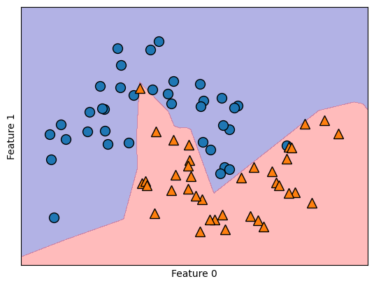
mlp = MLPClassifier(solver='lbfgs', activation='tanh', max_iter=400, random_state=0, hidden_layer_sizes=[10, 10])
mlp.fit(X_train, y_train)
MLPClassifier(activation='tanh', hidden_layer_sizes=[10, 10], max_iter=400,
random_state=0, solver='lbfgs')In a Jupyter environment, please rerun this cell to show the HTML representation or trust the notebook. On GitHub, the HTML representation is unable to render, please try loading this page with nbviewer.org.
Parameters
| hidden_layer_sizes | [10, 10] | |
| activation | 'tanh' | |
| solver | 'lbfgs' | |
| alpha | 0.0001 | |
| batch_size | 'auto' | |
| learning_rate | 'constant' | |
| learning_rate_init | 0.001 | |
| power_t | 0.5 | |
| max_iter | 400 | |
| shuffle | True | |
| random_state | 0 | |
| tol | 0.0001 | |
| verbose | False | |
| warm_start | False | |
| momentum | 0.9 | |
| nesterovs_momentum | True | |
| early_stopping | False | |
| validation_fraction | 0.1 | |
| beta_1 | 0.9 | |
| beta_2 | 0.999 | |
| epsilon | 1e-08 | |
| n_iter_no_change | 10 | |
| max_fun | 15000 |
mglearn.plots.plot_2d_separator(mlp, X_train, fill=True, alpha=.3)
mglearn.discrete_scatter(X_train[:, 0], X_train[:, 1], y_train)
plt.xlabel("Feature 0")
plt.ylabel("Feature 1");
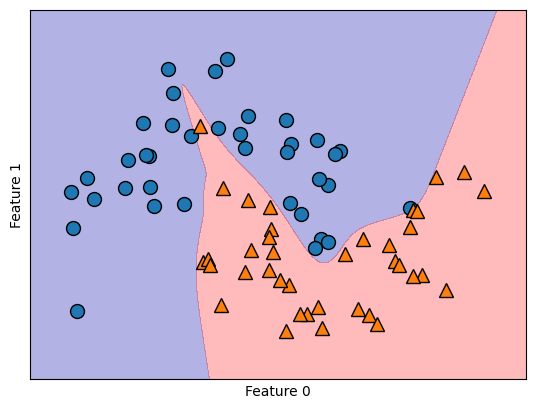
Además, podemos influir en la complejidad de una red neuronal incorporando una penalización \(L2\), similar al enfoque de la regresión de ridge y los clasificadores lineales. El parámetro responsable de esto en el
MLPClassifieres'alpha', análogo a los modelos de regresión lineal. Por defecto, asume un valor mínimo (regularización limitada). El siguiente experimento incluye dos capas ocultas, cada una de ellas compuesta por 10 o 100 unidades y diferentes valores dealpha
fig, axes = plt.subplots(2, 4, figsize=(20, 8))
for axx, n_hidden_nodes in zip(axes, [10, 100]):
for ax, alpha in zip(axx, [0.0001, 0.01, 0.1, 1]):
mlp = MLPClassifier(solver='lbfgs', random_state=0, max_iter=1000, hidden_layer_sizes=[n_hidden_nodes, n_hidden_nodes], alpha=alpha)
mlp.fit(X_train, y_train)
mglearn.plots.plot_2d_separator(mlp, X_train, fill=True, alpha=.3, ax=ax)
mglearn.discrete_scatter(X_train[:, 0], X_train[:, 1], y_train, ax=ax)
ax.set_title("n_hidden=[{}, {}]\nalpha={:.4f}".format(n_hidden_nodes, n_hidden_nodes, alpha))
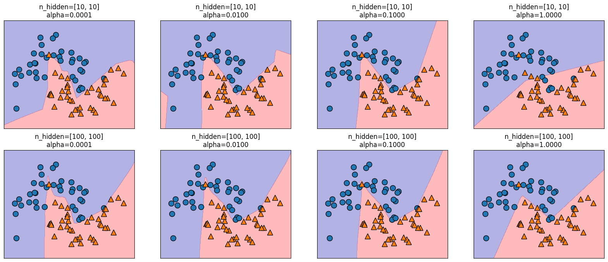
Observación
Como habrá podido comprobar, existen multitud de métodos para gestionar la complejidad de una red neuronal, como el número de capas ocultas, las unidades en cada capa oculta y la regularización (
alpha), entre otros. Un rasgo fundamental de las redes neuronales reside en suconfiguración aleatoria inicial de pesos antes de comenzar el aprendizaje.Esta aleatoriedad influye en el modelo aprendido resultante. Así, el empleo de parámetros idénticos puede dar lugar a modelos distintos debido a semillas aleatorias diferentes. Mientras que este efecto es más pronunciado para redes pequeñas, es menos significativo para redes de tamaño adecuado donde la complejidad se elige apropiadamente.
fig, axes = plt.subplots(2, 4, figsize=(20, 8))
for i, ax in enumerate(axes.ravel()):
mlp = MLPClassifier(solver='lbfgs', random_state=i, max_iter=2000, hidden_layer_sizes=[100, 100])
mlp.fit(X_train, y_train)
mglearn.plots.plot_2d_separator(mlp, X_train, fill=True, alpha=.3, ax=ax)
mglearn.discrete_scatter(X_train[:, 0], X_train[:, 1], y_train, ax=ax)
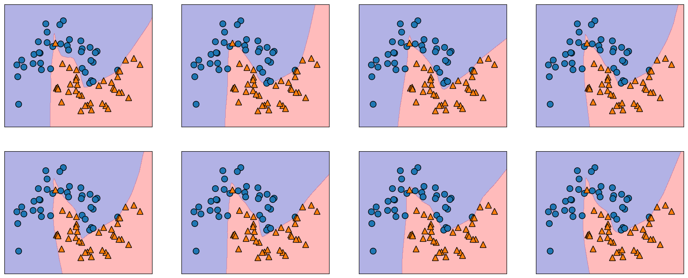
Para una comprensión más completa de las redes neuronales en escenarios prácticos, implementaremos el MLPClassifier en el conjunto de datos Breast Cancer. Nuestro paso inicial consiste en utilizar los parámetros por defecto. Queda como tarea para el estudiante, utilizar
GridSearchCVyPipeline.
from sklearn.datasets import load_breast_cancer
cancer = load_breast_cancer()
print("Cancer data per-feature maxima:\n{}".format(cancer.data.max(axis=0)))
Cancer data per-feature maxima:
[2.811e+01 3.928e+01 1.885e+02 2.501e+03 1.634e-01 3.454e-01 4.268e-01
2.012e-01 3.040e-01 9.744e-02 2.873e+00 4.885e+00 2.198e+01 5.422e+02
3.113e-02 1.354e-01 3.960e-01 5.279e-02 7.895e-02 2.984e-02 3.604e+01
4.954e+01 2.512e+02 4.254e+03 2.226e-01 1.058e+00 1.252e+00 2.910e-01
6.638e-01 2.075e-01]
X_train, X_test, y_train, y_test = train_test_split(cancer.data, cancer.target, random_state=0)
mlp = MLPClassifier(random_state=42)
mlp.fit(X_train, y_train)
MLPClassifier(random_state=42)In a Jupyter environment, please rerun this cell to show the HTML representation or trust the notebook.
On GitHub, the HTML representation is unable to render, please try loading this page with nbviewer.org.
Parameters
| hidden_layer_sizes | (100,) | |
| activation | 'relu' | |
| solver | 'adam' | |
| alpha | 0.0001 | |
| batch_size | 'auto' | |
| learning_rate | 'constant' | |
| learning_rate_init | 0.001 | |
| power_t | 0.5 | |
| max_iter | 200 | |
| shuffle | True | |
| random_state | 42 | |
| tol | 0.0001 | |
| verbose | False | |
| warm_start | False | |
| momentum | 0.9 | |
| nesterovs_momentum | True | |
| early_stopping | False | |
| validation_fraction | 0.1 | |
| beta_1 | 0.9 | |
| beta_2 | 0.999 | |
| epsilon | 1e-08 | |
| n_iter_no_change | 10 | |
| max_fun | 15000 |
print("Accuracy on training set: {:.2f}".format(mlp.score(X_train, y_train)))
print("Accuracy on test set: {:.2f}".format(mlp.score(X_test, y_test)))
Accuracy on training set: 0.94
Accuracy on test set: 0.92
El MLP muestra una precisión notable, aunque no a la par de otros modelos. Al igual que en el caso anterior del
SVC, esta discrepancia se debe probablemente al escalado de los datos. Las redes neuronales exigen una varianza uniforme entre las características de entrada, idealmente con una media de 0 y una varianza de 1.Para satisfacer estos criterios, los datos deben reescalarse. Mientras que aquí estamos implementando este proceso manualmente, en el capítulo Evaluación de modelos y Pipelines se usa
StandardScalerpara el manejo automatizado de este procedimiento
Calculamos el valor medio por característica en el conjunto de entrenamiento
mean_on_train = X_train.mean(axis=0)
Calculamos la desviación estándar de cada característica en el conjunto de entrenamiento
std_on_train = X_train.std(axis=0)
Procedemos con el proceso de estandarización a media 0 y desviación 1
X_train_scaled = (X_train - mean_on_train) / std_on_train
X_test_scaled = (X_test - mean_on_train) / std_on_train
mlp = MLPClassifier(random_state=0, max_iter=400)
mlp.fit(X_train_scaled, y_train)
MLPClassifier(max_iter=400, random_state=0)In a Jupyter environment, please rerun this cell to show the HTML representation or trust the notebook.
On GitHub, the HTML representation is unable to render, please try loading this page with nbviewer.org.
Parameters
| hidden_layer_sizes | (100,) | |
| activation | 'relu' | |
| solver | 'adam' | |
| alpha | 0.0001 | |
| batch_size | 'auto' | |
| learning_rate | 'constant' | |
| learning_rate_init | 0.001 | |
| power_t | 0.5 | |
| max_iter | 400 | |
| shuffle | True | |
| random_state | 0 | |
| tol | 0.0001 | |
| verbose | False | |
| warm_start | False | |
| momentum | 0.9 | |
| nesterovs_momentum | True | |
| early_stopping | False | |
| validation_fraction | 0.1 | |
| beta_1 | 0.9 | |
| beta_2 | 0.999 | |
| epsilon | 1e-08 | |
| n_iter_no_change | 10 | |
| max_fun | 15000 |
print("Accuracy on training set: {:.3f}".format(mlp.score(X_train_scaled, y_train)))
print("Accuracy on test set: {:.3f}".format(mlp.score(X_test_scaled, y_test)))
Accuracy on training set: 1.000
Accuracy on test set: 0.972
Dado que se aprecia una disparidad entre el rendimiento de entrenamiento y el de prueba, se puede intentar mejorar el rendimiento de generalización reduciendo la complejidad del modelo. En este escenario, optamos por intensificar el parámetro
"alpha"(de 0.0001 a 1) para imponer una regularización más potente de los pesos
mlp = MLPClassifier(max_iter=1000, alpha=1, random_state=0)
mlp.fit(X_train_scaled, y_train)
MLPClassifier(alpha=1, max_iter=1000, random_state=0)In a Jupyter environment, please rerun this cell to show the HTML representation or trust the notebook.
On GitHub, the HTML representation is unable to render, please try loading this page with nbviewer.org.
Parameters
| hidden_layer_sizes | (100,) | |
| activation | 'relu' | |
| solver | 'adam' | |
| alpha | 1 | |
| batch_size | 'auto' | |
| learning_rate | 'constant' | |
| learning_rate_init | 0.001 | |
| power_t | 0.5 | |
| max_iter | 1000 | |
| shuffle | True | |
| random_state | 0 | |
| tol | 0.0001 | |
| verbose | False | |
| warm_start | False | |
| momentum | 0.9 | |
| nesterovs_momentum | True | |
| early_stopping | False | |
| validation_fraction | 0.1 | |
| beta_1 | 0.9 | |
| beta_2 | 0.999 | |
| epsilon | 1e-08 | |
| n_iter_no_change | 10 | |
| max_fun | 15000 |
print("Accuracy on training set: {:.3f}".format(mlp.score(X_train_scaled, y_train)))
print("Accuracy on test set: {:.3f}".format(mlp.score(X_test_scaled, y_test)))
Accuracy on training set: 0.988
Accuracy on test set: 0.972
Descubrir lo que ha aprendido una red neuronal suele ser todo un reto. Una técnica para comprender mejor los conocimientos adquiridos consiste en analizar los pesos del modelo. Puede ver un ejemplo en la galería de
scikit-learn. Sin embargo, para el conjunto de datos de Cáncer de Mama, la comprensión puede ser algo desafiante.La siguiente rutina muestra los pesos aprendidos, conectando la entrada a la primera capa oculta. Las filas corresponden a las 30 características de entrada, mientras que las columnas corresponden a las 100 unidades ocultas.
import seaborn as sns
plt.figure(figsize=(20, 15))
sns.set(font_scale=1.8)
plt.imshow(mlp.coefs_[0], interpolation='none', cmap='viridis', aspect='auto')
plt.yticks(range(30), cancer.feature_names)
plt.xlabel("Columns in weight matrix")
plt.ylabel("Input feature")
plt.colorbar();

Una posible inferencia que podemos hacer es que las
características que tienen pesos muy pequeños para todas las unidades ocultas son "menos importantes" para el modelo. Podemos ver que “mean smoothness” y “mean compactness”, además de las características encontradas entre “smoothness error” y “fractal dimension error”, tienen pesos relativamente bajos comparados con otras características. Esto podría significar que se trata de rasgos menos relevantes o, posiblemente, que no las representamos de forma que la red neuronal pudiera utilizarlas.También podemos visualizar los pesos que conectan la capa oculta con la capa de salida, pero son aún más difíciles de interpretar. Aunque
MLPClassifieryMLPRegressorproporcionan interfaces fáciles de usar para las arquitecturas de redes neuronales más comunes, solo capturan un pequeño subconjunto de lo que es posible con las redes neuronales. Si está interesado en trabajar con modelos más flexibles o modelos más grandes, se recomienda mirar más allá de scikit-learn en las fantásticas bibliotecas de aprendizaje profundo.Para los usuarios de
Python, las más conocidas sonkeras, lasagnay `tensor-flow. Estas bibliotecas proporcionan una interfaz mucho más flexible para construir redes neuronales y seguir el rápido progreso en la investigación del aprendizaje profundo, también permiten el uso de unidades de procesamiento gráfico (GPU) de alto rendimiento que scikit-learn no soporta.
2.11. Análisis de Malware por API calls#
¿Por qué es importante este caso de estudio?
El análisis de comportamiento de malware mediante secuencias de llamadas a la API (API calls) es una de las aplicaciones más relevantes del aprendizaje profundo en ciberseguridad. A diferencia del análisis estático (inspeccionar el código sin ejecutarlo), este enfoque es dinámico: observa cómo se comporta un programa mientras se ejecuta en un entorno controlado (sandbox), registrando el orden en que invoca funciones del sistema operativo.
En esta sección aprenderemos a:
Interpretar un conjunto de datos de secuencias de llamadas a la API y entender qué información captura (y cuál pierde) su representación tabular.
Construir un flujo de trabajo de preprocesamiento y modelado libre de fuga de información (data leakage).
Ajustar hiperparámetros de una red neuronal
MLPClassifiermediante validación cruzada, evitando el sobreajuste (overfitting).Evaluar el modelo con métricas apropiadas para datos desbalanceados.
El siguiente conjunto de datos forma parte de una investigación sobre la detección y clasificación de Malware mediante Deep Learning (ver Oliveira, Angelo; Sassi, Renato José (2019)). Contiene 42.797 secuencias de llamadas a la API de malware y 1.079 secuencias de llamadas a la API de goodware. Cada secuencia se compone de las 100 primeras llamadas a la API consecutivas no repetidas asociadas al proceso principal, extraídas del elemento “calls” de los informes de Cuckoo Sandbox.
Características
Columna |
Descripción |
Tipo |
|---|---|---|
|
Hash MD5 del ejemplo (identificador único de la muestra) |
Cadena de 32 bytes |
|
Código numérico de la llamada a la API observada en la posición \(i\) de la secuencia |
Entero (0-306) |
|
Etiqueta de clase |
Entero: 0 (Goodware) o 1 (Malware) |
Nota sobre la naturaleza de los datos
Cada fila no es un vector de características independientes entre sí: es una secuencia ordenada de 100 pasos temporales. La columna t_0 corresponde a la primera llamada a la API observada, t_1 a la segunda, y así sucesivamente. Esto significa que, en principio, el orden importa: dos muestras podrían compartir exactamente las mismas 100 llamadas pero en distinto orden, y representar comportamientos completamente diferentes. Más adelante retomaremos esta observación al decidir cómo las representamos para el modelo.
{kind=link}
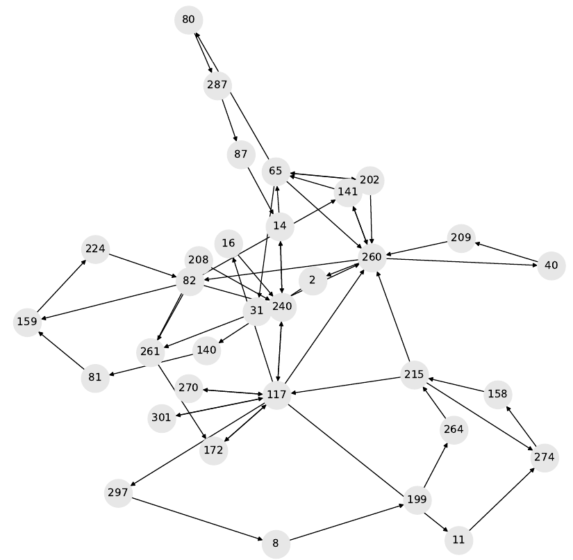
Fig. 2.19 Gráfico de comportamiento del malware troyano con hash MD5 ac65ce897a1f0dc273e8dc54fe3768ec.#
import warnings
warnings.filterwarnings('ignore')
import numpy as np
import pylab as pl
import pandas as pd
import matplotlib.pyplot as plt
import seaborn as sns
import random
from sklearn.utils import shuffle
from sklearn.svm import SVC
from sklearn.metrics import confusion_matrix,classification_report
from sklearn.model_selection import cross_val_score, GridSearchCV
from sklearn.pipeline import make_pipeline
from sklearn.preprocessing import StandardScaler
from sklearn.neural_network import MLPClassifier
from sklearn.model_selection import train_test_split
import pickle
import glob
from sklearn.metrics import f1_score
from sklearn.metrics import classification_report
from sklearn.metrics import roc_curve
from sklearn.metrics import precision_recall_curve
from time import process_time
data = pd.read_csv("https://raw.githubusercontent.com/lihkir/Data/main/api_call_sequence_per_malware.csv")
data.shape
(43876, 102)
La siguiente es una construida en el presente curso, la cual puede ser útil para quienes solo desean presentar unas cuantas columnas al inicio y al final de cada
pandas. Solo requiere del nombre delpandasy el número de columnas que deseamos visualziar al inicio y al final. Es bastante util, para utilizar en losJupyter Books, donde el espacio horizontal es reducido.
def idx_lr(data, n_new_cols):
n_data_cols = len(data.columns)
idx_l = sorted(list(range(n_new_cols - 1, -1, -1)))
idx_r = sorted(list(range(n_data_cols - 1, n_data_cols - n_new_cols - 1, -1)))
return idx_l + idx_r
Para imprimir por ejemplo las tres primeras columnas al inicio y al final del pandas data utilizamos la orden
data.iloc[:, idx_lr(data, 4)]. Nótese que no contamos con datos faltantes que requieran de un procedimiento de imputación (ver Análisis con datos faltantes). Además, nótese que todas las columnas con la excepción dehashcorresponde a datos numericos discretos.
data.iloc[:, idx_lr(data, 4)].head()
| hash | t_0 | t_1 | t_2 | t_97 | t_98 | t_99 | malware | |
|---|---|---|---|---|---|---|---|---|
| 0 | 071e8c3f8922e186e57548cd4c703a5d | 112 | 274 | 158 | 208 | 56 | 71 | 1 |
| 1 | 33f8e6d08a6aae939f25a8e0d63dd523 | 82 | 208 | 187 | 171 | 215 | 35 | 1 |
| 2 | b68abd064e975e1c6d5f25e748663076 | 16 | 110 | 240 | 65 | 113 | 112 | 1 |
| 3 | 72049be7bd30ea61297ea624ae198067 | 82 | 208 | 187 | 302 | 228 | 302 | 1 |
| 4 | c9b3700a77facf29172f32df6bc77f48 | 82 | 240 | 117 | 260 | 141 | 260 | 1 |
print("# NaN values:", data.isna().sum().sum())
# NaN values: 0
data.dtypes
hash object
t_0 int64
t_1 int64
t_2 int64
t_3 int64
...
t_96 int64
t_97 int64
t_98 int64
t_99 int64
malware int64
Length: 102, dtype: object
Pasamos ahora a eliminar aquellas variables (columnas) irrelevantes en el análisis predictivo, a saber la columna
hashdel pandasdatay creamos uno nuevo al cual nombraremosdata_new.
data_new = data.drop(columns=['hash'], axis=1)
data_new.shape
(43876, 101)
Verifiquemos si nuestros datos están desbalanceados respecto a las clases de interés 0 (Goodware) o 1 (Malware)
import matplotlib
matplotlib.rc_file_defaults()
cnt_pro = data_new['malware'].value_counts()
sns.barplot(x=cnt_pro.index, y=cnt_pro.values, alpha=0.8)
plt.ylabel('Number of data', fontsize=10)
plt.xlabel('Malware Type', fontsize=10);
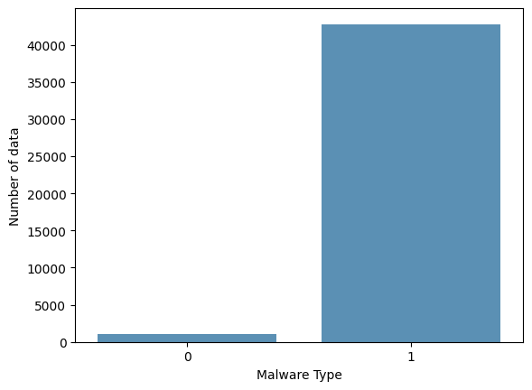
Claramente, existe un desbalance entre los tipos de Malware. Por otro lado, verifiquemos para algunos Hash, como se distribuyen la frecuencia de cada una de sus API calls. Las columnas representan las frecuencias de cada API call representado por los valores
t_0, t_1,..., t99.
fig, axs = plt.subplots(nrows=2, ncols=2, figsize=(15, 12))
plt.subplots_adjust(hspace=0.2)
fig.suptitle("Malware API Calls by Hash", fontsize=14, y=0.92)
for i, ax in zip(range(1, 5), axs.ravel()):
plt.subplot(2, 2, i)
n_hash = random.randint(0, len(data_new))
data_new.iloc[n_hash,:-1].value_counts().plot(kind='bar', xlabel='Hash: '+ data['hash'][n_hash], ylabel='API Call');
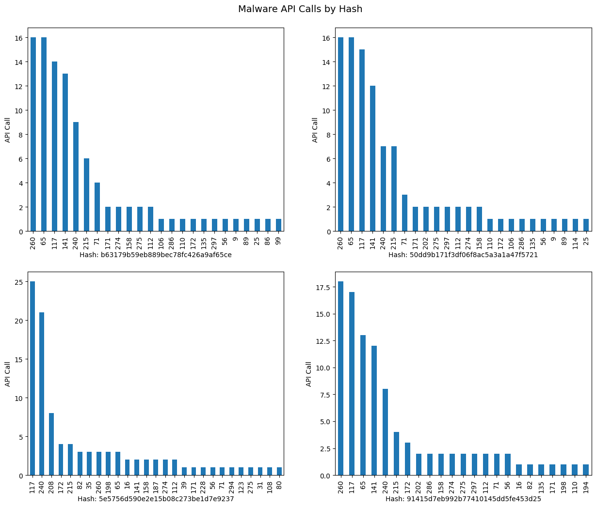
Procedemos a hacer uso de
make_pipelineyGridSearchCVpara obtener parámetros del mejor modelo. En este caso utilizaremos el clasificadorMLPClassifier, el cual se estudió en clase de forma analítica.
El algoritmo clasificador
MLPClassifierdenota el valor de la longitud de paso \(\mu_{i}\) comolearning_rate, el cual asume los valores constant, invscaling, adaptive. En este ejemplo se ha probado con los tres parámetros, obteniendo siempre el mejor score cuandolearning_rate = constant. Por otro lado,hidden_layer_sizesrepresenta el número de neuronas en el \(i\)th layer. En este problema de clasificación optamos por seleccionar desde una a tres capas escondidas (hidden layers), pero siempre el mejor score entregado porGridSearchCV, fue obtenido considerando una sola capa. Por lo tanto, en este problema hacemos solo un grid search sobre el número de neuronas sobre una sola capa.Dado que nuestro problema es de clasificación binaria, también consideramos en el
param_grid, soloactivation = logistic. Las opciones del clasificador sonidentity, logistic, tanh, relu, peroGridSearchCVentregó el mejor score usandologisticcomo era de esperarse. El parámetroalphaes la fuerza del término de regularización \(L^2\), similar al utilizado en la regresiónridgecuando deseamos reducir la complejidad de un modelo. Puede revisar la documentación del clasificador para ver todos los parámetros asociados, y aquellos que son por defecto (ver MLPClassifier).
{kind=link}
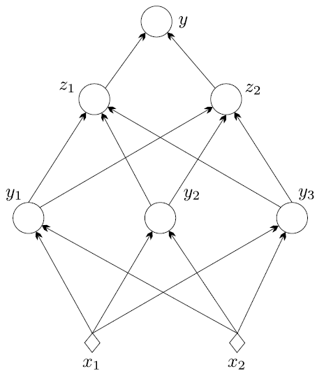
Fig. 2.20 Red neuronal feed-forward de tres capas.#
La capa de entrada
En general las ANNs tienen exactamente una capa de entrada. Con respecto al número de neuronas que componen esta capa, este parámetro se determina de forma completa y única, una vez que se conoce la forma de los datos de entrenamiento. En concreto, el número de neuronas que componen esa capa es igual al número de características (columnas) de sus datos. Algunas configuraciones de ANNs añaden un nodo adicional para un término de sesgo.
La capa de salida
Al igual que la capa de entrada, cada ANN tiene exactamente una capa de salida. Determinar su tamaño (número de neuronas) es sencillo; está completamente determinado por la configuración del modelo elegido. Si la ANN es un regresor, la capa de salida tiene un solo nodo (Time Series Forecasting). Si la ANN es un clasificador, entonces también tiene un solo nodo, a menos que se utilice
softmax, en cuyo caso la capa de salida tiene un nodo por cada etiqueta de clase en su modelo.
Las capas ocultas
¿Cuántas capas ocultas?. Si los datos son linealmente separables (lo que a menudo se sabe cuando se empieza a codificar una ANN, SVM puede servir de test), entonces no se necesita ninguna capa oculta. Por supuesto, tampoco se necesita una ANN para resolver los datos, pero está seguirá haciendo su trabajo.
Sobre la configuración de las capas ocultas en las ANNs, existe un consenso dentro de este tema, y es la diferencia de rendimiento al añadir capas ocultas adicionales: las situaciones en las que el rendimiento mejora con una segunda (o tercera, etc.) capa oculta son muy pocas. Una capa oculta es suficiente para la gran mayoría de los problemas.
Entonces, ¿qué pasa con el tamaño de la(s) capa(s) oculta(s), cuántas neuronas?. Existen algunas reglas empíricas; de ellas, la más utilizada es ‘The optimal size of the hidden layer is usually between the size of the input and size of the output layers’. Jeff Heaton, the author of Introduction to Neural Networks in Java.
Hay una regla empírica adicional que ayuda en los problemas de aprendizaje supervisado. Normalmente se puede evitar el sobreajuste si se mantiene el número de neuronas por debajo de:
\[ N_{h}=\frac{N_{s}}{(\alpha\cdot(N_{i}+N_{o}))} \]\(N_{i}=\) número de neuronas de entrada
\(N_{o}=\) número de neuronas de salida
\(N_{s}=\) número de muestras en el conjunto de datos de entrenamiento
\(\alpha=\) un factor de escala arbitrario, normalmente 2-10
Un valor de \(\alpha=2\) suele funcionar sin sobreajustar. Se puede pensar en \(\alpha\) como el factor de ramificación efectivo o el número de pesos distintos de cero para cada neurona. Las capas de salida harán que el factor de ramificación “efectivo” sea muy inferior al factor de ramificación medio real de la red. Para profundizar mas en el diseño de redes neuronales, ver el siguiente texto de Martin Hagan.
En resumen, para la mayoría de los problemas, probablemente se podría obtener un rendimiento decente (incluso sin un segundo paso de optimización) estableciendo la configuración de la capa oculta utilizando sólo dos reglas:
el número de capas ocultas es igual a uno
el número de neuronas de esa capa es la media de las neuronas de las capas de entrada y salida. ¡Nótese que en el ejemplo de esta sección el número de columnas para \(X\) es 100!.
Pasamos ahora a implementar un modelo de clasificación para el conjunto de datos relacionados con: Análisis de Malware por API calls. Utilizaremos la clase
MLPClassifiery como preprocesamiento, estandarizaremos nuestros datos usando la claseStandardScaler. Para encontrar los mejores parámetros y evita problemas de data leakage, utilizaremosPipelineyGridSearchCVtal como se explicó en secciones anteriores.
pipe = make_pipeline(StandardScaler(), MLPClassifier(max_iter=10000, random_state=42))
param_grid = {'mlpclassifier__alpha': [0.1, 0.01, 0.001],
'mlpclassifier__hidden_layer_sizes': [(10,), (100,), (1000,)],
'mlpclassifier__activation': ['logistic'],
'mlpclassifier__learning_rate': ['constant']}
Construimos nuestra matriz de caracteristicas, o variable explicativa X y el vector de clases o la variable respuesta y
y = data_new['malware']
X = data_new.drop(['malware'], axis=1)
Realizamos la división de nuestros datos a priori, con el objetivo de evitar data leakage. Consideramos el mismo
random_stateutilizado en el clasificador, con el objetivo de que los resutlados sean reproducibles.
X_train, X_test, y_train, y_test = train_test_split(X, y, random_state=42)
El siguiente ciclo if ha sido implementado en este curso para evitar reentrenar nuestro modelo clasificador. Nótese que si el algoritmo no detecta que existe un archivo de extensión
.pkl, reentrena el modelo, de lo contrario, utiliza el modelo entrenado a priori, el cual ha sido guardado en el archivo.pkl. Los archivoPicklede extensión.pklen simples palabras se encargan de serializar un objeto, esto es transformar el mismo en una cadena de bytes única que puede ser guardada en un archivo (de extensión .pkl), archivo que podemos desempaquetar después y trabajar con su contenido. Para poder utlizarlo necesitamos importarlo con la ordenimport pickle, e instalar la librería (Pickel viene por defecto desde Python 3.9) si así se requiere utilizando:
pip install pickle
from joblib import dump, load
import time
grid = None
if len(glob.glob("grid_mlp.joblib")) != 0:
grid = load('grid_mlp.joblib')
if len(glob.glob("cpu_time.txt")) != 0:
with open('cpu_time.txt', 'r', encoding='utf-8') as f:
saved_time = f.read()
print(saved_time)
else:
print("Archivo cpu_time.txt no encontrado")
else:
start = time.time()
grid = GridSearchCV(pipe, param_grid, cv=5, n_jobs=-1, scoring='roc_auc')
grid.fit(X_train, y_train)
end = time.time()
elapsed_minutes = (end - start) / 60
str_cpu_time = f"GridSearchCV time: {elapsed_minutes:.2f} minutes"
print(str_cpu_time)
with open('cpu_time.txt', 'w', encoding='utf-8') as f:
f.write(str_cpu_time)
dump(grid, 'grid_mlp.joblib')
print("Best CV score = %0.3f" % grid.best_score_)
print("Best parameters:\n{}".format(grid.best_params_))
GridSearchCV time: 2.92 minutes
Best CV score = 0.958
Best parameters:
{'mlpclassifier__activation': 'logistic', 'mlpclassifier__alpha': 0.01, 'mlpclassifier__hidden_layer_sizes': (100,), 'mlpclassifier__learning_rate': 'constant'}
Utilizamos el
f1_score, el cual, de acuerdo a lo estudiado en secciones previas, calcula la media armonica entreprecisionyrecall
print(f"F1 Score of the classifier is: {f1_score(y_test, grid.predict(X_test))}")
F1 Score of the classifier is: 0.9937633808061063
Además podemos usar
classification_reporty la matriz de confusión, para identificar aquellas clases que fueron incorrectamente clasificadas por nuestro modelo
print(classification_report(y_test, grid.predict(X_test)))
precision recall f1-score support
0 0.94 0.56 0.70 283
1 0.99 1.00 0.99 10686
accuracy 0.99 10969
macro avg 0.96 0.78 0.85 10969
weighted avg 0.99 0.99 0.99 10969
mlp_cm = confusion_matrix(y_test, grid.predict(X_test))
f, ax = plt.subplots(figsize=(5,5))
sns.heatmap(mlp_cm, annot=True, linewidth=0.7, linecolor='black', fmt='g', ax=ax, cmap="BuPu")
plt.title('MLP Confusion Matrix')
plt.xlabel('Y predict')
plt.ylabel('Y test')
plt.show()
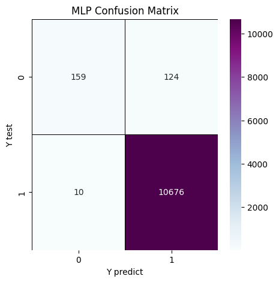
Nótese que la
clase 0, presenta el mayor número de clasificaciones erroneas(FP), obtenidas por nuestra ANN. Justamente esto se debe al desbalance notorio en nuestros datos, el cual se inclina hacia la clases 1, de mayor frecuencia. Si se tiene clara una métrica de negocio o un punto de operación, podríamos ajustar el número de prediccion incorrectas a favor de este punto de operación, tal como en el problema de detección de cancer, donde el interés era reducir (FN). Para analizar el comportamiento del clasificador a diferentes umbrales, utilizamos la curva ROC y precision-recall
fpr_mlp, tpr_mlp, thresholds_mlp = roc_curve(y_test, grid.predict_proba(X_test)[:, 1])
plt.plot(fpr_mlp, tpr_mlp, label="ROC Curve MLP")
plt.xlabel("FPR")
plt.ylabel("TPR (recall)")
close_default_mlp = np.argmin(np.abs(thresholds_mlp - 0.5))
plt.plot(fpr_mlp[close_default_mlp], tpr_mlp[close_default_mlp], '^',
markersize=10, label="threshold 0.5 MLP", fillstyle="none", c='k', mew=2)
plt.legend(loc=4);
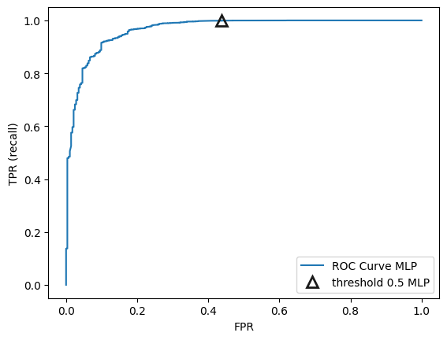
Nótese que la tasa TPR se mantiene aproximadamente contante para valores de FPR>0.2, esto es, para esta tasas de FPR no se está sacrificando la tasa recall. Si deseamos mantener un recall alto, aproximadamente, mayor que 0.8, podemos considerar por ejemplo una tasa FPR en torno a 0.1, con la que no estaríamos sacrificando recall y además, obtendriamos un tasa de falsos positivos FPR relativamente baja.
precision_mlp, recall_mlp, thresholds_mlp = precision_recall_curve(y_test, grid.predict_proba(X_test)[:, 1])
plt.plot(precision_mlp, recall_mlp, label="MLP")
close_default_mlp = np.argmin(np.abs(thresholds_mlp - 0.5))
plt.plot(precision_mlp[close_default_mlp], recall_mlp[close_default_mlp], '^', c='k',
markersize=10, label="threshold 0.5 MLP", fillstyle="none", mew=2)
plt.xlabel("Precision")
plt.ylabel("Recall")
plt.legend(loc="best");
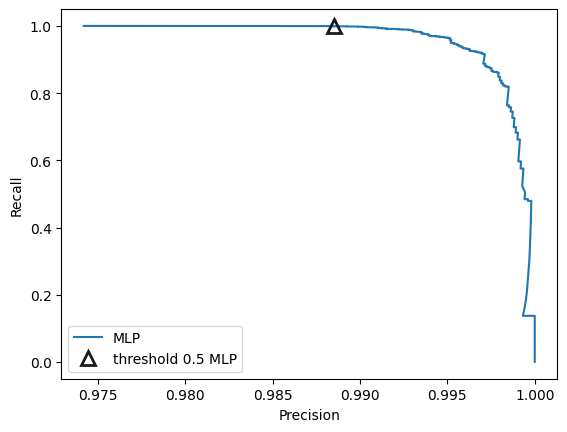
Nótese que con el umbral por defecto, la curva precision-recall muestra una clasificación con scores bastante buenos para cada una de estas métricas, incluso, si movemos el umbral un poco, para favorecer la clase 0 que es la menos frecuente, vamos a obtener de igual manera un rango de valores altos para precision y recall. Sólo valores de precision muy elevados, esto es, valores cuya distancia 1 tiende a cero, estaríamos sacrificando recall.
2.11.1. Entrenamiento en PySpark#
2.11.2. ¿Por qué usar PySpark para modelos de Machine Learning con grandes volúmenes de datos?#
A medida que trabajamos con datasets más grandes, las herramientas tradicionales como
scikit-learncomienzan a mostrar ciertas limitaciones. Aunque son excelentes para prototipado rápido y problemas de tamaño moderado, no están diseñadas para escalar eficientemente cuando tratamos con millones de registros.Aquí es donde entra PySpark, la interfaz en Python de
Apache Spark.PySparkpermite:Ejecutar operaciones en paralelo aprovechando múltiples núcleos o incluso múltiples máquinas (clústeres)
Procesar y transformar datos a gran escala con pipelines eficientes
Entrenar modelos de machine learning distribuidos con la API
pyspark.ml
Elemento |
¿Necesario? |
Comentario |
|---|---|---|
Python |
Sí |
Versión recomendada: 3.8 a 3.10 |
PySpark instalado ( |
Sí |
Necesario para ejecutar Spark desde Python |
scikit-learn ( |
Sí |
Necesario para cargar el dataset de Iris |
Jupyter, VSCode o IDE |
Recomendado |
Necesario si deseas una interfaz cómoda para desarrollar |
Java JDK (versión requerida por PySpark |
Usualmente necesario |
Spark requiere Java. Asegúrate de tener |
findspark ( |
Opcional |
Útil si usas notebooks y necesitas inicializar Spark manualmente |
MLflow ( |
Opcional |
Solo si planeas hacer tracking de experimentos |
Para instalar Java (ver Java Downloads)
Configurar
JAVA_HOMEpermanentemente. Si prefieres no tener que hacer esto en cada notebook:Abre el Panel de Control → Sistema → Configuración avanzada del sistema.
Clic en “Variables de entorno”.
En “Variables del sistema”, haz clic en “Nueva…” y agrega:
Nombre:
JAVA_HOMEValor:
C:\Program Files\Java\jdk-17.0.20(ajusta según tu versión)
Cierra y vuelve a abrir tu entorno (
Jupyter, Anaconda, etc.).
Preparar entorno y datos en
PySpark
import pandas as pd
from pyspark.sql import SparkSession
spark = SparkSession.builder \
.appName("MLP with PySpark") \
.getOrCreate()
WARNING: Using incubator modules: jdk.incubator.vector
Using Spark's default log4j profile: org/apache/spark/log4j2-defaults.properties
26/07/26 21:43:43 WARN Utils: Your hostname, DESKTOP-14GHD2E, resolves to a loopback address: 127.0.1.1; using 10.255.255.254 instead (on interface lo)
26/07/26 21:43:43 WARN Utils: Set SPARK_LOCAL_IP if you need to bind to another address
Using Spark's default log4j profile: org/apache/spark/log4j2-defaults.properties
Setting default log level to "WARN".
To adjust logging level use sc.setLogLevel(newLevel). For SparkR, use setLogLevel(newLevel).
26/07/26 21:43:44 WARN NativeCodeLoader: Unable to load native-hadoop library for your platform... using builtin-java classes where applicable
pdf = pd.read_csv("https://raw.githubusercontent.com/lihkir/Data/main/api_call_sequence_per_malware.csv")
print(pdf.dtypes)
hash object
t_0 int64
t_1 int64
t_2 int64
t_3 int64
...
t_96 int64
t_97 int64
t_98 int64
t_99 int64
malware int64
Length: 102, dtype: object
total_unicos = pdf["hash"].nunique()
total_filas = len(pdf)
print(f"Hashes únicos: {total_unicos} de {total_filas} filas")
print("Top 10 hashes más frecuentes:")
print(pdf["hash"].value_counts().head(10))
Hashes únicos: 43867 de 43876 filas
Top 10 hashes más frecuentes:
hash
075323e77815ee8bcc7854ce23955a15 2
bdaaac3fa3f6796825a51ef1c0e5b3fd 2
3d8a7a97ea954dd4fe66279df2b445e0 2
a71a2319cf8c74a89501eb80acd04fe6 2
03384ab6368b68ed16ecb9e6352539af 2
0822ec2ba98d291e5bfc836bc3686096 2
79b78bb3d583748040c41ded09555fd3 2
f78ea80cec007b2c32fb10f9c6c82f39 2
64261f6acf8e566a70ec8b62af8ccdb1 2
fe19283eb05bbe24699c0a5134e1c9fd 1
Name: count, dtype: int64
pdf.drop(columns=['hash'], inplace=True)
df_spark = spark.createDataFrame(pdf)
target_col = "malware"
feature_cols = [c for c in df_spark.columns if c != target_col]
num_features = len(feature_cols)
num_classes = pdf['malware'].nunique()
En
PySpark, antes de entrenar un modelo, hay que combinar todas las columnas de entrada en una sola columnafeaturesusandoVectorAssembler
from pyspark.ml.feature import VectorAssembler
assembler = VectorAssembler(inputCols=feature_cols, outputCol="features")
data_assembled = assembler.transform(df_spark).select("features", target_col)
Escalado de datos (equivalente a
StandardScalerdesklearn)
from pyspark.ml.feature import StandardScaler
scaler = StandardScaler(inputCol="features", outputCol="scaledFeatures", withStd=True, withMean=True)
scaler_model = scaler.fit(data_assembled)
data_scaled = scaler_model.transform(data_assembled).select("scaledFeatures", target_col)
26/07/26 21:43:57 WARN SparkStringUtils: Truncated the string representation of a plan since it was too large. This behavior can be adjusted by setting 'spark.sql.debug.maxToStringFields'.
División en
trainytest
train, test = data_scaled.randomSplit([0.8, 0.2], seed=42)
Entrenar un
MLPenPySpark. PySpark tiene su propioMultilayerPerceptronClassifier
from pyspark.ml.classification import MultilayerPerceptronClassifier
from pyspark.ml.evaluation import BinaryClassificationEvaluator
from pyspark.ml.tuning import CrossValidator, ParamGridBuilder
from pyspark.ml.evaluation import MulticlassClassificationEvaluator
layers_10 = [num_features, 10, num_classes]
layers_100 = [num_features, 100, num_classes]
layers_1000 = [num_features, 1000, num_classes]
mlp = MultilayerPerceptronClassifier(
featuresCol="scaledFeatures",
labelCol=target_col,
maxIter=100,
seed=123
)
paramGrid = (ParamGridBuilder()
.addGrid(mlp.layers, [
[num_features, 10, num_classes],
[num_features, 100, num_classes],
[num_features, 1000, num_classes]
])
.addGrid(mlp.stepSize, [0.1, 0.01, 0.001]) # Aproximando a 'alpha' y 'learning_rate'
.addGrid(mlp.maxIter, [100]) # 'learning_rate' constant por defecto en PySpark
.build()
)
evaluator = BinaryClassificationEvaluator(
labelCol=target_col,
rawPredictionCol="rawPrediction",
metricName="areaUnderROC"
)
cv = CrossValidator(
estimator=mlp,
estimatorParamMaps=paramGrid,
evaluator=evaluator,
numFolds=5
)
import time
start_time = time.time()
cv_model = cv.fit(train)
end_time = time.time()
print("Tiempo total de cómputo: {:.2f} segundos".format(end_time - start_time))
26/07/26 21:44:02 WARN InstanceBuilder: Failed to load implementation from:dev.ludovic.netlib.blas.JNIBLAS
Tiempo total de cómputo: 438.55 segundos
predictions = cv_model.transform(test)
f1 = evaluator.evaluate(predictions)
print(f"F1 Score: {f1:.4f}")
F1 Score: 0.9460
Comparación de desempeño: PySpark vs Scikit-learn: Los resultados obtenidos muestran que, para conjuntos de datos de tamaño pequeño o mediano, el entrenamiento mediante scikit-learn puede ser significativamente más rápido que mediante PySpark. Esto se debe al costo adicional de inicialización, serialización y comunicación inherente a los sistemas distribuidos.
¿Cuándo PySpark resulta más eficiente? El uso de PySpark comienza a ser ventajoso en escenarios como:
Conjuntos de datos del orden de varios GB o TB.
Datos que no caben en memoria RAM de una sola máquina.
Entornos con múltiples nodos de cómputo.
Necesidad de procesamiento realmente distribuido.
Por ejemplo, en problemas con:
Decenas de millones de registros,
Cientos o miles de variables,
Entrenamiento distribuido en cluster,
las herramientas tradicionales como scikit-learn pueden no ser viables, mientras que PySpark permite escalar el procesamiento de forma eficiente.
“Distribuido no siempre es más rápido.”
El paralelismo distribuido introduce un overhead que solo se compensa cuando el volumen de datos lo justifica.
Regla práctica
Escenario |
Herramienta recomendada |
|---|---|
Dataset pequeño o mediano |
scikit-learn |
Dataset grande en una sola máquina |
scikit-learn |
Dataset muy grande distribuido |
PySpark |
Entornos productivos en cluster |
PySpark |
En síntesis, la elección entre scikit-learn y PySpark debe basarse principalmente en el tamaño de los datos y la infraestructura disponible, más que en la expectativa de una mayor velocidad por el solo hecho de utilizar cómputo distribuido.
2.12. Proyecto Integrador de Deep Learning#
2.12.1. Objetivo#
Construir un modelo de clasificación supervisada usando MLP (Multilayer Perceptron/Red Neuronal Multicapa) para predecir si un usuario hará clic en un anuncio móvil (click = 1) o no (click = 0). Se comparará el desempeño de los modelos construidos con scikit-learn y PySpark. Además, se aplicará LIME para interpretar predicciones individuales del modelo.
2.12.2. Dataset#
Nombre: Avazu Click-Through Rate Prediction
Fuente: Kaggle – Avazu CTR Prediction
Tamaño: aproximadamente 40 millones de registros
Características: variables anónimas relacionadas con publicidad móvil, dispositivo, aplicación y contexto de navegación
Descripción de los campos principales:
id: identificador del anuncioclick: indicador de si hubo clichour: hora de la impresión del anuncio (formato YYMMDDHH)C1: variable categórica anonimizadabanner_possite_id,site_domain,site_categoryapp_id,app_domain,app_categorydevice_id,device_ip,device_modeldevice_type,device_conn_typeC14–C21: variables categóricas anónimas
2.12.3. Target#
Variable binaria:
click0 = No hubo clic
1 = Hubo clic
La variable objetivo ya se encuentra definida en el dataset:
y = df["click"]
2.12.4. Exploración de datos (EDA)#
Cargar el dataset CSV
Analizar la distribución de la variable
clickVerificar valores faltantes y tipos de datos
Analizar la cardinalidad de las variables categóricas
Transformar la variable
houren nuevas características temporales (día, hora, franja horaria)
Visualizaciones requeridas:
Gráfico de barras de la variable
clickHistogramas de variables numéricas derivadas
Gráficos de frecuencia de las principales variables categóricas
Distribución de clics por hora del día
Matriz de correlación para variables numéricas creadas
2.12.5. scikit-learn#
Debido al gran tamaño del dataset, el trabajo en scikit-learn deberá realizarse sobre una muestra representativa (por ejemplo, 1 millón de registros).
Seleccionar un subconjunto de variables relevantes
Codificación de variables categóricas (OneHotEncoder o Target Encoding)
Escalado de variables numéricas con StandardScaler
División train_test_split (80/20), estratificada por clase
Ejemplo de muestreo:
df_sample = df.sample(n=1000000, random_state=42)
2.12.6. PySpark#
Esta sección debe trabajarse con el dataset completo.
Leer el CSV utilizando SparkSession
Uso de StringIndexer y OneHotEncoder para variables categóricas
Combinar columnas de entrada en una sola columna
featuresusando VectorAssemblerEscalar las variables con StandardScaler (opcional)
Dividir en train y test usando randomSplit, estratificada si es posible
Ejemplo de lectura:
spark.read.csv("train.csv", header=True, inferSchema=True)
2.12.7. Modelado con scikit-learn#
Usar MLPClassifier
Realizar búsqueda de hiperparámetros (GridSearchCV) para:
hidden_layer_sizes(por ejemplo: [(50,), (100,), (100,50)])alpha(por ejemplo: [0.0001, 0.001, 0.01])max_iter(por ejemplo: [50, 100])
Métricas a evaluar:
Accuracy
Precision
Recall
F1-score
ROC AUC
Matriz de confusión
Medir el tiempo de entrenamiento y predicción
2.12.8. Modelado con PySpark#
Usar pyspark.ml.classification.MultilayerPerceptronClassifier
Probar combinaciones de hiperparámetros como:
Estructura de capas (layers):
[num_features, 10, 2][num_features, 50, 2][num_features, 100, 2]
stepSize: 0.1, 0.01maxIter: 100, 200
Evaluar con BinaryClassificationEvaluator
Calcular:
Precisión
Recall
F1-score
Matriz de confusión
Medir el tiempo total de entrenamiento y predicción
2.12.9. Interpretabilidad con LIME#
Instalar LIME:
pip install limeSeleccionar una o dos instancias clasificadas erróneamente
Aplicar
lime.lime_tabular.LimeTabularExplainerpara analizar la(s) predicción(es)Visualizar variables más influyentes en la decisión del modelo
Incluir gráficos de explicación local
2.12.10. Comparación de Resultados#
Tabla comparativa con:
Métricas para scikit-learn vs PySpark
Tiempo de cómputo (entrenamiento y predicción)
Gráficos:
Curvas ROC
Gráficos comparativos de tiempo
2.12.11. Entregable#
Un Jupyter Book bien documentado que incluya:
Análisis exploratorio
Preprocesamiento en ambos entornos
Modelado y tuning de hiperparámetros
Evaluación de métricas
Interpretabilidad con LIME (con visualizaciones)
Reflexión crítica sobre:
¿Qué entorno fue más rápido?
¿Cuál más preciso?
¿Cuándo es útil PySpark?
¿Qué aporta LIME?
2.13. Recursos#
2. Predicción de series temporales#
Series de tiempo
Uno de los enfoques clásicos para la predicción de series temporales es el modelo autorregresivo de orden \(p\), denotado como \(AR(p)\), el cual modela el valor actual \(y_t\) como una combinación lineal de sus \(p\) valores pasados:
\[ y_t = \omega_0 + \sum_{i=1}^{p} \omega_i y_{t-i} + \varepsilon_t, \]donde \(\omega_i\) son coeficientes del modelo y \(\varepsilon_t\) es un término de error con media cero y varianza constante.
Este modelo puede generalizarse mediante una función no lineal \(f\):
\[ y_t = f(y_{t-1}, y_{t-2}, \dots, y_{t-p}), \]donde \(f\) puede ser aprendida utilizando redes neuronales artificiales. En este capítulo se consideran tres arquitecturas neuronales para aproximar \(f\), cada una definida por su número de capas ocultas, neuronas por capa y función de activación. El entrenamiento de los modelos se realiza mediante el algoritmo de backpropagation del error o sus variantes.
En esta sección, utilizaremos
MLPpara desarrollar modelos de predicción de series temporales. El conjunto de datos utilizado para estos ejemplos es sobre la contaminación atmosférica medida por la concentración de partículas (PM) de diámetro inferior o igual a 2.5 micrómetros.Hay otras variables, como la presión atmosférica, temperatura del aire, punto de rocío, etc. Se han desarrollado un par de modelos de series temporales, uno sobre la presión atmosférica
PRESy otro sobrepm 2.5. El conjunto de datos se ha descargado del repositorio de aprendizaje automático de la UCI.
import warnings
from matplotlib import pyplot as plt
import seaborn as sns
warnings.filterwarnings("ignore")
sns.set_style("darkgrid")
import sys
import pandas as pd
import numpy as np
import datetime
from sklearn.preprocessing import MinMaxScaler
import tensorflow as tf
from tensorflow import keras
from keras.layers import Dense, Input, Dropout
from keras.optimizers import SGD
from keras.models import Model
from keras.models import load_model
from keras.callbacks import ModelCheckpoint
import os
from sklearn.metrics import r2_score
from sklearn.metrics import mean_absolute_error
2026-07-26 21:51:20.682421: I tensorflow/core/util/port.cc:153] oneDNN custom operations are on. You may see slightly different numerical results due to floating-point round-off errors from different computation orders. To turn them off, set the environment variable `TF_ENABLE_ONEDNN_OPTS=0`.
2026-07-26 21:51:21.796357: E external/local_xla/xla/stream_executor/cuda/cuda_fft.cc:485] Unable to register cuFFT factory: Attempting to register factory for plugin cuFFT when one has already been registered
2026-07-26 21:51:23.870849: E external/local_xla/xla/stream_executor/cuda/cuda_dnn.cc:8454] Unable to register cuDNN factory: Attempting to register factory for plugin cuDNN when one has already been registered
2026-07-26 21:51:24.079797: E external/local_xla/xla/stream_executor/cuda/cuda_blas.cc:1452] Unable to register cuBLAS factory: Attempting to register factory for plugin cuBLAS when one has already been registered
2026-07-26 21:51:26.710388: I tensorflow/core/platform/cpu_feature_guard.cc:210] This TensorFlow binary is optimized to use available CPU instructions in performance-critical operations.
To enable the following instructions: AVX2 AVX512F AVX512_VNNI AVX512_BF16 FMA, in other operations, rebuild TensorFlow with the appropriate compiler flags.
2026-07-26 21:51:50.466315: W tensorflow/compiler/tf2tensorrt/utils/py_utils.cc:38] TF-TRT Warning: Could not find TensorRT
df = pd.read_csv('https://raw.githubusercontent.com/lihkir/Data/refs/heads/main/PRSA_data_2010.1.1-2014.12.31.csv', usecols=lambda column: column not in ['DEWP', 'TEMP', 'cbwd', 'Iws', 'Is', 'Ir'])
devices = tf.config.list_physical_devices()
print("Available devices:")
for device in devices:
print(device)
gpus = tf.config.list_physical_devices('GPU')
if gpus:
print("TensorFlow is using GPU.")
for gpu in gpus:
gpu_details = tf.config.experimental.get_device_details(gpu)
print(f"GPU details: {gpu_details}")
else:
print("TensorFlow is not using GPU.")
Available devices:
PhysicalDevice(name='/physical_device:CPU:0', device_type='CPU')
PhysicalDevice(name='/physical_device:GPU:0', device_type='GPU')
TensorFlow is using GPU.
GPU details: {'compute_capability': (8, 9), 'device_name': 'NVIDIA GeForce RTX 4070'}
WARNING: All log messages before absl::InitializeLog() is called are written to STDERR
I0000 00:00:1785120712.481104 7793 cuda_executor.cc:1001] could not open file to read NUMA node: /sys/bus/pci/devices/0000:01:00.0/numa_node
Your kernel may have been built without NUMA support.
I0000 00:00:1785120713.712611 7793 cuda_executor.cc:1001] could not open file to read NUMA node: /sys/bus/pci/devices/0000:01:00.0/numa_node
Your kernel may have been built without NUMA support.
I0000 00:00:1785120713.712779 7793 cuda_executor.cc:1001] could not open file to read NUMA node: /sys/bus/pci/devices/0000:01:00.0/numa_node
Your kernel may have been built without NUMA support.
I0000 00:00:1785120713.714171 7793 cuda_executor.cc:1001] could not open file to read NUMA node: /sys/bus/pci/devices/0000:01:00.0/numa_node
Your kernel may have been built without NUMA support.
print('Shape of the dataframe:', df.shape)
Shape of the dataframe: (43824, 7)
df.head()
| No | year | month | day | hour | pm2.5 | PRES | |
|---|---|---|---|---|---|---|---|
| 0 | 1 | 2010 | 1 | 1 | 0 | NaN | 1021.0 |
| 1 | 2 | 2010 | 1 | 1 | 1 | NaN | 1020.0 |
| 2 | 3 | 2010 | 1 | 1 | 2 | NaN | 1019.0 |
| 3 | 4 | 2010 | 1 | 1 | 3 | NaN | 1019.0 |
| 4 | 5 | 2010 | 1 | 1 | 4 | NaN | 1018.0 |
Para asegurarse de que las filas están en el orden correcto de fecha y hora de las observaciones, se crea una nueva columna datetime a partir de las columnas relacionadas con la fecha y la hora del DataFrame. La nueva columna se compone de objetos
datetime.datetime de Python. El DataFrame se ordena en orden ascendente sobre esta columna
df['datetime'] = df[['year', 'month', 'day', 'hour']].apply(lambda row: datetime.datetime(year=row['year'], month=row['month'], day=row['day'],
hour=row['hour']), axis=1)
df.sort_values('datetime', ascending=True, inplace=True)
df.head()
| No | year | month | day | hour | pm2.5 | PRES | datetime | |
|---|---|---|---|---|---|---|---|---|
| 0 | 1 | 2010 | 1 | 1 | 0 | NaN | 1021.0 | 2010-01-01 00:00:00 |
| 1 | 2 | 2010 | 1 | 1 | 1 | NaN | 1020.0 | 2010-01-01 01:00:00 |
| 2 | 3 | 2010 | 1 | 1 | 2 | NaN | 1019.0 | 2010-01-01 02:00:00 |
| 3 | 4 | 2010 | 1 | 1 | 3 | NaN | 1019.0 | 2010-01-01 03:00:00 |
| 4 | 5 | 2010 | 1 | 1 | 4 | NaN | 1018.0 | 2010-01-01 04:00:00 |
Dibujamos un diagrama de cajas para visualizar la tendencia central y la dispersión de por ejemplo la columna
PRES
plot_fontsize = 18;
import matplotlib.pyplot as plt
import seaborn as sns
plt.figure(figsize=(15, 8))
plt.subplot(1, 2, 1)
g1 = sns.boxplot(x=df['PRES'], orient="h") # Removed palette
g1.set_title('Box plot of Air Pressure', fontsize=plot_fontsize)
g1.set_xlabel('Air Pressure readings in hPa', fontsize=plot_fontsize)
plt.subplot(1, 2, 2)
g2 = sns.boxplot(x=df['pm2.5'], orient="h") # Removed palette
g2.set_title('Box plot of PM2.5', fontsize=plot_fontsize)
g2.set_xlabel('PM2.5 readings in µg/m³', fontsize=plot_fontsize)
plt.show()
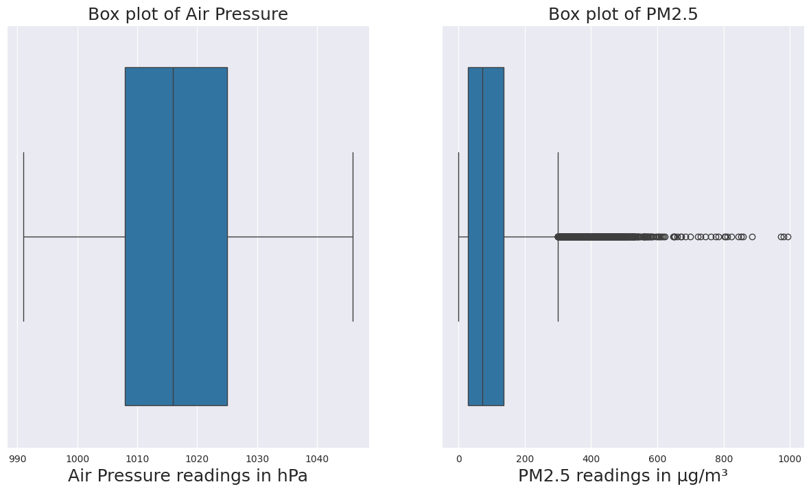
plt.figure(figsize=(15, 8))
plt.subplot(1, 2, 1)
g1 = sns.lineplot(x=df.index, y=df['PRES']) # Using x and y parameters instead of data
g1.set_title('Time series of Air Pressure', fontsize=plot_fontsize)
g1.set_xlabel('Index', fontsize=plot_fontsize)
g1.set_ylabel('Air Pressure readings in hPa', fontsize=plot_fontsize)
plt.subplot(1, 2, 2)
g2 = sns.lineplot(x=df.index, y=df['pm2.5']) # Using x and y parameters instead of data
g2.set_title('Time series of PM2.5', fontsize=plot_fontsize)
g2.set_xlabel('Index', fontsize=plot_fontsize)
g2.set_ylabel('PM2.5 readings in µg/m³', fontsize=plot_fontsize)
plt.show()
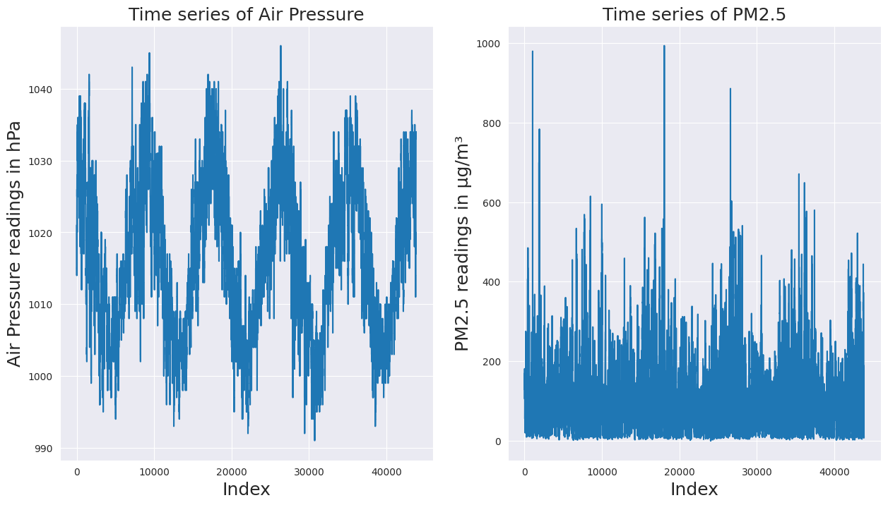
Los algoritmos de gradiente descendente funcionan mejor (por ejemplo, convergen más rápido) si las variables están dentro del intervalo \([-1, 1]\). Muchas fuentes relajan el límite hasta \([-3, 3]\). La variable
PRESes escalada conminmaxpara limitar la variable transformada dentro de \([0,1]\).
Observación
Antes de entrenar el modelo, el conjunto de datos se divide en dos partes: el conjunto de entrenamiento y el conjunto de validación. La red neuronal se entrena en el conjunto de entrenamiento. Esto significa que el cálculo de la función de pérdida, la propagación hacia atrás y los pesos actualizados mediante un algoritmo de gradiente descendente se realizan en el conjunto de entrenamiento.
El conjunto de validación se utiliza para evaluar el modelo y determinar el número de épocas en su entrenamiento. Aumentar el número de épocas reducirá aún más la función de pérdida en el conjunto de entrenamiento, pero no necesariamente tendrá el mismo efecto en el conjunto de validación debido al sobreajuste en el conjunto de entrenamiento, por lo que el número de épocas se controla manteniendo una evaluación y verificación sobre la función de pérdida calculada para el conjunto de validación.
Utilizamos
Kerascon el backendTensorflowpara definir y entrenar el modelo. Todos los pasos implicados en el entrenamiento y validación del modelo se realizan llamando a las funciones apropiadas de laAPIdeKeras.
Los cuatro primeros años, de 2010 a 2013, se utilizan como entrenamiento y 2014 se utiliza para la validación
from sklearn.preprocessing import MinMaxScaler
import datetime
split_date = datetime.datetime(year=2014, month=1, day=1, hour=0)
df_train = df.loc[df['datetime'] < split_date].copy()
df_val = df.loc[df['datetime'] >= split_date].copy()
scaler_pres = MinMaxScaler(feature_range=(0, 1))
df_train['scaled_PRES'] = scaler_pres.fit_transform(df_train[['PRES']])
df_val['scaled_PRES'] = scaler_pres.transform(df_val[['PRES']])
print('Shape of train:', df_train.shape)
print('Shape of val:', df_val.shape)
Shape of train: (35064, 9)
Shape of val: (8760, 9)
df_train.head()
| No | year | month | day | hour | pm2.5 | PRES | datetime | scaled_PRES | |
|---|---|---|---|---|---|---|---|---|---|
| 0 | 1 | 2010 | 1 | 1 | 0 | NaN | 1021.0 | 2010-01-01 00:00:00 | 0.545455 |
| 1 | 2 | 2010 | 1 | 1 | 1 | NaN | 1020.0 | 2010-01-01 01:00:00 | 0.527273 |
| 2 | 3 | 2010 | 1 | 1 | 2 | NaN | 1019.0 | 2010-01-01 02:00:00 | 0.509091 |
| 3 | 4 | 2010 | 1 | 1 | 3 | NaN | 1019.0 | 2010-01-01 03:00:00 | 0.509091 |
| 4 | 5 | 2010 | 1 | 1 | 4 | NaN | 1018.0 | 2010-01-01 04:00:00 | 0.490909 |
df_val.head()
| No | year | month | day | hour | pm2.5 | PRES | datetime | scaled_PRES | |
|---|---|---|---|---|---|---|---|---|---|
| 35064 | 35065 | 2014 | 1 | 1 | 0 | 24.0 | 1014.0 | 2014-01-01 00:00:00 | 0.418182 |
| 35065 | 35066 | 2014 | 1 | 1 | 1 | 53.0 | 1013.0 | 2014-01-01 01:00:00 | 0.400000 |
| 35066 | 35067 | 2014 | 1 | 1 | 2 | 65.0 | 1013.0 | 2014-01-01 02:00:00 | 0.400000 |
| 35067 | 35068 | 2014 | 1 | 1 | 3 | 70.0 | 1013.0 | 2014-01-01 03:00:00 | 0.400000 |
| 35068 | 35069 | 2014 | 1 | 1 | 4 | 79.0 | 1012.0 | 2014-01-01 04:00:00 | 0.381818 |
Restablecemos los índices del conjunto de validación
df_val.reset_index(drop=True, inplace=True)
df_val.head()
| No | year | month | day | hour | pm2.5 | PRES | datetime | scaled_PRES | |
|---|---|---|---|---|---|---|---|---|---|
| 0 | 35065 | 2014 | 1 | 1 | 0 | 24.0 | 1014.0 | 2014-01-01 00:00:00 | 0.418182 |
| 1 | 35066 | 2014 | 1 | 1 | 1 | 53.0 | 1013.0 | 2014-01-01 01:00:00 | 0.400000 |
| 2 | 35067 | 2014 | 1 | 1 | 2 | 65.0 | 1013.0 | 2014-01-01 02:00:00 | 0.400000 |
| 3 | 35068 | 2014 | 1 | 1 | 3 | 70.0 | 1013.0 | 2014-01-01 03:00:00 | 0.400000 |
| 4 | 35069 | 2014 | 1 | 1 | 4 | 79.0 | 1012.0 | 2014-01-01 04:00:00 | 0.381818 |
También se grafican las series temporales de entrenamiento y validación normalizadas para PRES.
plt.figure(figsize=(15, 8))
plt.subplot(1, 2, 1)
g1 = sns.lineplot(df_train['PRES'], color='b')
g1.set_title('Time series of scaled Air Pressure in train set', fontsize=plot_fontsize)
g1.set_xlabel('Index', fontsize=plot_fontsize)
g1.set_ylabel('Scaled Air Pressure readings', fontsize=plot_fontsize);
plt.subplot(1, 2, 2)
g2 = sns.lineplot(df_val['PRES'], color='r')
g2.set_title('Time series of scaled Air Pressure in validation set', fontsize=plot_fontsize)
g2.set_xlabel('Index', fontsize=plot_fontsize)
g2.set_ylabel('Scaled Air Pressure readings', fontsize=plot_fontsize);
plt.show()
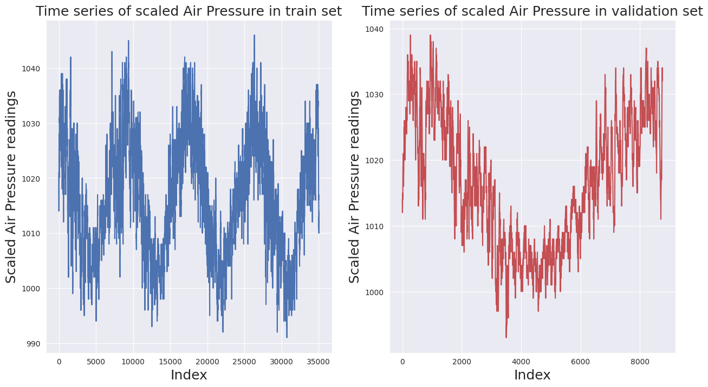
Regresores y Variable Objetivo
Ahora necesitamos generar los regresores (\(X\)) y la variable objetivo (\(y\)) para el entrenamiento y la validación. La matriz bidimensional de regresores y la matriz unidimensional objetivo se crean a partir de la matriz unidimensional original de la columna standardized_PRES en el DataFrame.
Para el modelo de predicción de series temporales, de este ejemplo, se utilizan las observaciones de los últimos siete días para predecir el día siguiente. Esto equivale a un modelo \(AR(7)\). Definimos una función que toma la serie temporal original y el número de pasos temporales en regresores como entrada para generar las matrices \(X\) e \(y\)
def makeXy(ts, nb_timesteps):
"""
Input:
ts: original time series
nb_timesteps: number of time steps in the regressors
Output:
X: 2-D array of regressors
y: 1-D array of target
"""
X = []
y = []
for i in range(nb_timesteps, ts.shape[0]):
if i-nb_timesteps <= 4:
print(i-nb_timesteps, i-1, i)
X.append(list(ts.loc[i-nb_timesteps:i-1])) #Regressors
y.append(ts.loc[i]) #Target
X, y = np.array(X), np.array(y)
return X, y
X_train, y_train = makeXy(df_train['scaled_PRES'], 7)
0 6 7
1 7 8
2 8 9
3 9 10
4 10 11
print('Shape of train arrays:', X_train.shape, y_train.shape)
Shape of train arrays: (35057, 7) (35057,)
X_val, y_val = makeXy(df_val['scaled_PRES'], 7)
0 6 7
1 7 8
2 8 9
3 9 10
4 10 11
print('Shape of validation arrays:', X_val.shape, y_val.shape)
Shape of validation arrays: (8753, 7) (8753,)
Ahora definimos la red
MLPutilizando laAPIfuncional deKeras. En este enfoque una capa puede ser declarada como la entrada de la siguiente capa en el momento de definir la siguiente
input_layer = Input(shape=(7,), dtype='float32')
En este caso,
Inputes una función que se utiliza para crear una capa de entrada en un modelo de red neuronal.shape=(7,)específica la forma de los datos de entrada. En este caso, significa que los datos de entrada tendrán 7 dimensiones.dtype='float32'especifica el tipo de datos de los elementos de la capa de entrada. En este caso, son números de punto flotante de 32 bits.
Las capas densas las definimos en esta caso con activación
tanh. Puede utilizar unGridSearchtal como se hizo en el curso de Machine Learning para encontrar hiperparámetros adecuados minimizando las métricas de regresión.
dense1 = Dense(32, activation='tanh')(input_layer)
dense2 = Dense(16, activation='tanh')(dense1)
dense3 = Dense(16, activation='tanh')(dense2)
I0000 00:00:1785120715.638274 7793 cuda_executor.cc:1001] could not open file to read NUMA node: /sys/bus/pci/devices/0000:01:00.0/numa_node
Your kernel may have been built without NUMA support.
I0000 00:00:1785120715.638350 7793 cuda_executor.cc:1001] could not open file to read NUMA node: /sys/bus/pci/devices/0000:01:00.0/numa_node
Your kernel may have been built without NUMA support.
I0000 00:00:1785120715.638382 7793 cuda_executor.cc:1001] could not open file to read NUMA node: /sys/bus/pci/devices/0000:01:00.0/numa_node
Your kernel may have been built without NUMA support.
I0000 00:00:1785120715.821176 7793 cuda_executor.cc:1001] could not open file to read NUMA node: /sys/bus/pci/devices/0000:01:00.0/numa_node
Your kernel may have been built without NUMA support.
I0000 00:00:1785120715.821243 7793 cuda_executor.cc:1001] could not open file to read NUMA node: /sys/bus/pci/devices/0000:01:00.0/numa_node
Your kernel may have been built without NUMA support.
2026-07-26 21:51:55.821272: I tensorflow/core/common_runtime/gpu/gpu_device.cc:2112] Could not identify NUMA node of platform GPU id 0, defaulting to 0. Your kernel may not have been built with NUMA support.
I0000 00:00:1785120715.821350 7793 cuda_executor.cc:1001] could not open file to read NUMA node: /sys/bus/pci/devices/0000:01:00.0/numa_node
Your kernel may have been built without NUMA support.
2026-07-26 21:51:55.821377: I tensorflow/core/common_runtime/gpu/gpu_device.cc:2021] Created device /job:localhost/replica:0/task:0/device:GPU:0 with 9554 MB memory: -> device: 0, name: NVIDIA GeForce RTX 4070, pci bus id: 0000:01:00.0, compute capability: 8.9
Dense e input_layer
Dense: Correspone a una capa totalmente conectada (fully connected).Unidades (Neurons): 32 neuronas.
dense1: Esta capa toma como entradainput_layer, que puede ser la capa de entrada del modelo u otra capa anterior.dense2: Esta capa toma como entrada la salida dedense1. Esto significa que los 32 valores de salida dedense1se usan como entrada paradense2. Similarmente, ocurre condense3
Observación
Las múltiples capas ocultas y el gran número de neuronas en cada capa oculta le dan a las redes neuronales la capacidad de modelar la compleja no linealidad de las relaciones subyacentes entre los regresores y el objetivo. Sin embargo, las redes neuronales profundas también pueden sobreajustar los datos de entrenamiento y dar malos resultados en el conjunto de validación o prueba. La función
Dropoutse ha utilizado eficazmente para regularizar las redes neuronales profundas.
En este ejemplo, se añade una capa
Dropoutantes de la capa de salida. Dropout aleatoriamente establece \(p\) fracción de neuronas de entrada a cero antes de pasar a la siguiente capa. La eliminación aleatoria de entradas actúa esencialmente como un tipo de ensamblaje de modelos de agregaciónbootstrap. Al apagar neuronas aleatoriamente,Dropoutestá forzando a la red a no depender excesivamente de ninguna unidad específica, mejorando la generalización.Por ejemplo, el bosque aleatorio utiliza el ensamblaje mediante la construcción de árboles en subconjuntos aleatorios de características de entrada. Utilizamos \(p=0.2\) para descartar el 20% de las características de entrada seleccionadas aleatoriamente.
dropout_layer = Dropout(0.2)(dense3)
Por último, la capa de salida predice la presión atmosférica del día siguiente
output_layer = Dense(1, activation='linear')(dropout_layer)
Las capas de entrada, densa y de salida se empaquetarán ahora dentro de un modelo, que es una clase envolvente para entrenar y hacer predicciones. Como función de pérdida se utiliza el error cuadrático medio (MSE). Los pesos de la red se optimizan mediante el algoritmo
Adam.Adamsignifica Estimación Adaptativa de Momentos y ha sido una opción popular para el entrenamiento de redes neuronales profundas.A diferencia del Gradiente descendente Estocástico, Adam utiliza diferentes tasas de aprendizaje para cada peso y las actualiza por separado a medida que avanza el entrenamiento. La tasa de aprendizaje de un peso se actualiza basándose en medias móviles ponderadas exponencialmente de los gradientes del peso y los gradientes al cuadrado.
ts_model = Model(inputs=input_layer, outputs=output_layer)
ts_model.compile(loss='mean_squared_error', optimizer='adam')
ts_model.summary()
Model: "functional_1"
┏━━━━━━━━━━━━━━━━━━━━━━━━━━━━━━━━━┳━━━━━━━━━━━━━━━━━━━━━━━━┳━━━━━━━━━━━━━━━┓ ┃ Layer (type) ┃ Output Shape ┃ Param # ┃ ┡━━━━━━━━━━━━━━━━━━━━━━━━━━━━━━━━━╇━━━━━━━━━━━━━━━━━━━━━━━━╇━━━━━━━━━━━━━━━┩ │ input_layer (InputLayer) │ (None, 7) │ 0 │ ├─────────────────────────────────┼────────────────────────┼───────────────┤ │ dense (Dense) │ (None, 32) │ 256 │ ├─────────────────────────────────┼────────────────────────┼───────────────┤ │ dense_1 (Dense) │ (None, 16) │ 528 │ ├─────────────────────────────────┼────────────────────────┼───────────────┤ │ dense_2 (Dense) │ (None, 16) │ 272 │ ├─────────────────────────────────┼────────────────────────┼───────────────┤ │ dropout (Dropout) │ (None, 16) │ 0 │ ├─────────────────────────────────┼────────────────────────┼───────────────┤ │ dense_3 (Dense) │ (None, 1) │ 17 │ └─────────────────────────────────┴────────────────────────┴───────────────┘
Total params: 1,073 (4.19 KB)
Trainable params: 1,073 (4.19 KB)
Non-trainable params: 0 (0.00 B)
Observación
En este caso,
Params #es calculado mediante la fórmula:Param # = #Entradas x #Neuronas + #Neuronas. Esto incluye los pesos de cada conexión entre las entradas y las neuronas y un bias para cada neurona. En este casoParams # = 7x32 + 32 = 256.El modelo se entrena llamando a la función
fit()en el objeto modelo y pasándoleX_trainyy_train. El entrenamiento se realiza para un número predefinido de épocas. Además,batch_sizedefine el número de muestras del conjunto de entrenamiento que se utilizarán para una instancia de backpropagation.
El conjunto de datos de validación también se pasa para evaluar el modelo después de cada
epochcompleta. Un objetoModelCheckpointrastrea la función de pérdida en el conjunto de validación y guarda el modelo para la época en la que la función de pérdida ha sido mínima.
save_weights_at = os.path.join('keras_models', 'PRSA_data_Air_Pressure_MLP_weights.{epoch:02d}-{val_loss:.4f}.keras')
save_best = ModelCheckpoint(save_weights_at, monitor='val_loss', verbose=0,
save_best_only=True, save_weights_only=False, mode='min', save_freq='epoch');
Aquí
val_losses el valor de la función de coste para los datos de validación cruzada ylosses el valor de la función de coste para los datos de entrenamiento. Converbose=0, no se imprime ningún mensaje en la consola durante el proceso de guardado del modelo.period=1indica que el modelo se evaluará y potencialmente se guardará después de cada época.
import os
from joblib import dump, load
history_airp = None
if os.path.exists('history_airp.joblib'):
history_airp = load('history_airp.joblib')
print("El archivo 'history_airp.joblib' ya existe. Se ha cargado el historial del entrenamiento.")
else:
history_airp = ts_model.fit(x=X_train, y=y_train, batch_size=16, epochs=20,
verbose=2, callbacks=[save_best], validation_data=(X_val, y_val),
shuffle=True);
dump(history_airp.history, 'history_airp.joblib')
print("El entrenamiento se ha completado y el historial ha sido guardado en 'history_airp.joblib'.")
El archivo 'history_airp.joblib' ya existe. Se ha cargado el historial del entrenamiento.
En este caso, el modo
verbose=2muestra una barra de progreso por cada época. Los modos posibles son:0para no mostrar nada,1para mostrar la barra de progreso,2para mostrar una línea por época. Las muestras se mezclan aleatoriamente antes de cada época (shuffle=True).
Se hacen predicciones para la presión atmosférica a partir del mejor modelo guardado. Las predicciones del modelo sobre la presión atmosférica escalada, se transforman inversamente para obtener predicciones sobre la presión atmosférica original. También se calcula la bondad de ajuste o
R cuadrado.
import os
import re
from tensorflow.keras.models import load_model
model_dir = 'keras_models'
files = os.listdir(model_dir)
pattern = r"PRSA_data_Air_Pressure_MLP_weights\.(\d+)-([\d\.]+)\.keras"
best_val_loss = float('inf')
best_model_file = None
best_model = None
# Buscar el mejor modelo según val_loss
for file in files:
match = re.match(pattern, file)
if match:
epoch = int(match.group(1))
val_loss = float(match.group(2))
if val_loss < best_val_loss:
best_val_loss = val_loss
best_model_file = file
if best_model_file:
best_model_path = os.path.join(model_dir, best_model_file)
print(f"\nCargando el mejor modelo: {best_model_file} (val_loss: {best_val_loss})")
try:
best_model = load_model(best_model_path)
print("Modelo cargado correctamente.")
except Exception as e:
print(f"Error al cargar modelo normalmente: {e}")
print("Intentando cargar con safe_mode=True ...")
try:
best_model = load_model(best_model_path, safe_mode=True, compile=False)
print("Modelo cargado correctamente en modo seguro.")
except Exception as e2:
print(f"No se pudo cargar el modelo ni en modo seguro: {e2}")
best_model = None
else:
print("No se encontraron archivos de modelos que coincidan con el patrón.")
Cargando el mejor modelo: PRSA_data_Air_Pressure_MLP_weights.03-0.0001.keras (val_loss: 0.0001)
Modelo cargado correctamente.
import tensorflow as tf, keras
print(tf.__version__)
print(keras.__version__)
2.17.0
3.2.1
preds = best_model.predict(X_val)
pred_PRES = scaler_pres.inverse_transform(preds)
pred_PRES = np.squeeze(pred_PRES)
WARNING: All log messages before absl::InitializeLog() is called are written to STDERR
I0000 00:00:1785120716.785839 10698 service.cc:146] XLA service 0x789b48005830 initialized for platform CUDA (this does not guarantee that XLA will be used). Devices:
I0000 00:00:1785120716.785904 10698 service.cc:154] StreamExecutor device (0): NVIDIA GeForce RTX 4070, Compute Capability 8.9
2026-07-26 21:51:56.991305: I tensorflow/compiler/mlir/tensorflow/utils/dump_mlir_util.cc:268] disabling MLIR crash reproducer, set env var `MLIR_CRASH_REPRODUCER_DIRECTORY` to enable.
2026-07-26 21:51:57.398056: I external/local_xla/xla/stream_executor/cuda/cuda_dnn.cc:531] Loaded cuDNN version 8907
I0000 00:00:1785120726.930006 10698 device_compiler.h:188] Compiled cluster using XLA! This line is logged at most once for the lifetime of the process.
274/274 ━━━━━━━━━━━━━━━━━━━━ 12s 2ms/step
r2 = r2_score(df_val['PRES'].loc[7:], pred_PRES)
print('R-squared for the validation set:', round(r2,4))
R-squared for the validation set: 0.9955
plt.figure(figsize=(5.5, 5.5))
plt.plot(range(50), df_val['PRES'].loc[7:56], linestyle='-', marker='*', color='r')
plt.plot(range(50), pred_PRES[:50], linestyle='-', marker='.', color='b')
plt.legend(['Actual','Predicted'], loc=2)
plt.title('Actual vs Predicted Air Pressure')
plt.ylabel('Air Pressure')
plt.xlabel('Index');
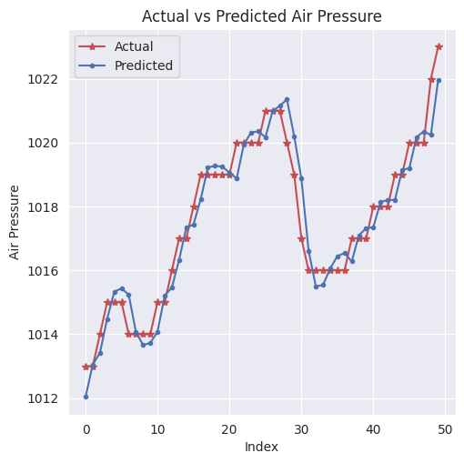
2.1. Proyecto Integrador de Deep Learning#
Objetivo
El proyecto busca predecir una variable temporal de interés, como el precio de cierre de criptomonedas o la velocidad del viento, utilizando exclusivamente su histórico temporal (por ejemplo, fecha y valores observados). Para ello, se emplea la librería timeseries-cv, junto con estrategias de validación temporal, una red neuronal tipo MLP y un análisis riguroso de residuos.
Adicionalmente, se propone construir, validar y desplegar un modelo robusto de deep learning, orientado tanto a la predicción del nivel de la serie como a la modelación de su volatilidad o variabilidad, partiendo únicamente de observaciones históricas.
El flujo de trabajo incluye:
Exploración y caracterización de la variabilidad de la serie
Construcción de ventanas temporales
Validación cruzada para datos secuenciales
Evaluación mediante métricas específicas
Análisis de residuos
Todo ello con el objetivo final de su despliegue en un entorno de MLOps.
Contexto
Las series temporales asociadas a criptomonedas y a variables ambientales como la velocidad del viento comparten características fundamentales como:
Alta variabilidad
No linealidad
Dependencia temporal compleja
Posibles cambios de régimen
Estas propiedades representan tanto un desafío como una oportunidad para el desarrollo de modelos predictivos avanzados. En el caso de las criptomonedas, la alta volatilidad impacta directamente en:
Trading algorítmico
Gestión de portafolios
Estimación de riesgos
Por su parte, en el ámbito energético y ambiental, la predicción de la velocidad del viento es clave para:
Planificación de sistemas de generación eólica
Optimización operativa
Gestión de incertidumbre en energías renovables
En ambos contextos, si bien la predicción puntual de la serie es relevante, modelar y anticipar la variabilidad o volatilidad proporciona una base más robusta para la toma de decisiones bajo incertidumbre.
Por ello, el forecasting de series temporales, cuando se aborda de manera rigurosa, reproducible y orientada a datos reales, se consolida como una tarea central en la ciencia de datos aplicada tanto a sistemas financieros como a sistemas energéticos y ambientales.
Datasets recomendados:
Fuente: Binance Public API. API gratuita, sin registro, y es la fuente más citada en literatura académica de alta frecuencia. Seleccione la criptomoneda de su interés para esta tarea o el dataset de velocidad del viento. Ejemplo de uso de la API de Binance
import requests, pandas as pd, time
from datetime import datetime
def get_binance_1m(symbol="BTCUSDT", start="2024-01-01", end="2024-01-31"):
url = "https://api.binance.com/api/v3/klines"
start_ms = int(datetime.strptime(start, "%Y-%m-%d").timestamp() * 1000)
end_ms = int(datetime.strptime(end, "%Y-%m-%d").timestamp() * 1000)
all_data = []
while start_ms < end_ms:
params = {
"symbol": symbol,
"interval": "1m",
"startTime": start_ms,
"endTime": end_ms,
"limit": 1000
}
r = requests.get(url, params=params)
data = r.json()
if not data: break
all_data.extend(data)
start_ms = data[-1][0] + 60000 # avanza 1 minuto
time.sleep(0.1) # evita rate limit
df = pd.DataFrame(all_data, columns=[
"open_time","open","high","low","close","volume",
"close_time","quote_volume","trades",
"taker_buy_base","taker_buy_quote","ignore"
])
df["open_time"] = pd.to_datetime(df["open_time"], unit="ms")
df[["open","high","low","close","volume"]] = \
df[["open","high","low","close","volume"]].astype(float)
return df[["open_time","open","high","low","close","volume","trades"]]
df = get_binance_1m("BTCUSDT", "2024-01-01", "2024-03-31")
df.to_csv("btc_1m_Q1_2024.csv", index=False)
print(df.shape)
Frecuencia: 1 minuto.
Variable clave: Precio de Cierre (
Close)Cálculo de la volatilidad: definición formal y ejemplo:
La volatilidad es una medida de dispersión de los rendimientos de un activo financiero.
Para una ventana de tamaño \(n\):
\[ \sigma_t = \sqrt{ \frac{1}{n} \sum_{i=1}^{n} (r_{t-i} - \bar{r})^2},~\text{donde}~r_t = \ln\left(\frac{P_t}{P_{t-1}}\right) \]\(P_t\): Precio de cierre en el día \(t\)
\(r_t\): Retorno logarítmico diario
\(\sigma_t\): Volatilidad histórica realizada en ventana de \(n\) días
\(\bar{r}\): Promedio de los retornos en la ventana
Datos del INMET - National Institute of Meteorology relacionados con velocidad del viento. La variable respuesta en este caso es la velocidad de viento suministrada de forma horaria por INMET. Debe seleccionar solo un dataset, el de velocidad del viento o el de criptomonedas.
Actividades a desarrollar. Cada resultado debe ir acompañado de análisis, justificación y visualización/tablas cuando sea relevante.
Análisis Exploratorio de Datos (EDA)
Estadísticas descriptivas de precios y retornos.
Visualizaciones: serie de precios, retornos diarios, histograma de retornos, autocorrelación (ACF) y ACF de cuadrados (para heterocedasticidad).
Preprocesamiento y cálculo de features
Cálculo de retornos logarítmicos.
Cálculo de volatilidad histórica (rolling std) para inspección (variable objetivo alternativa).
Generación de lags del precio (ventanas previas) para los siguientes tamaños: 7, 14, 21, 28 días.
Generación de targets multi-step: horizonte de 7 días (salida multisalida de longitud 7).
Split temporal y validación cruzada
Usar
split_train_val_test_groupKFold(de timeseries-cv / tsxv) para crear splits train / val / test sin data leakage.Escalado: fit del scaler solo con el train en cada fold; transformar val/test con ese scaler.
Modelado con Deep Learning
Entrenar MLP multisalida (por ejemplo
MLPRegressoro un keras MLP con salida 7) fold a fold.Guardar por fold: predicciones para train, val y test (todas las muestras del fold).
Evaluación: calcular métricas por horizonte (1..7) y agregadas (promedio sobre horizontes).
Métricas obligatorias — tablas por tamaño de input
Por cada tamaño de input (7, 14, 21, 28) se debe entregar una tabla (en el conjunto de test) que incluya, idealmente por fold y con su promedio (y std):
MAPE (Mean Absolute Percentage Error) — por horizonte y promedio.
MAE (Mean Absolute Error).
RMSE (Root Mean Squared Error).
MSE (Mean Squared Error).
\(p\)-value BDS test aplicado a los residuos del primer horizonte (\(h=1\)) (por fold) — y su promedio.
Formato recomendado de la tabla (por lag):
Filas = folds (Fold 1, Fold 2, … , Mean ± Std).
Columnas = métricas por horizonte (\(h=1,\dots,7\)) o resumen por horizonte + columna con BDS_pvalue_h1.
Diagnóstico de residuos
En cada fold, calcular residuos en test \(\text{resid} = y_{test}^{\text{real}} - y_{pred}\)
Aplicar BDS test a los residuos del horizonte 1 (test de independencia serial / no-iid).
Reportar el \(p\)-value.
Interpretación: \(p > 0.05\) → no rechazo de iid (mejor señal de independencia residual).
Visualización y análisis
Para cada tamaño de input:
Dibujar una curva (time series) que muestre train / val / test (validados con sus timestamps) y las predicciones correspondientes (por lo menos para el mejor fold, el peor fold y el fold mediano por RMSE).
Etiquetar claramente: train actual, train predicho, val actual, val predicho, test actual, test predicho.
Gráfica de RMSE por fold (e.g., barras) y RMSE promedio por horizonte (líneas con 7 puntos).
Tabla resumen comparativa de los 4 tamaños de lag con las métricas solicitadas (MAPE, MAE, RMSE, MSE, p-value BDS).
Guardar figuras en
notebooks/figs/y las tablas enresults/(CSV).Documentación y deployment
Entregar notebook reproducible con todo el pipeline (EDA → features → CV → entrenamiento → evaluación → residuos → plots).
Entregar API (
app/api.py) que reciba lags y devuelva 7 predicciones de volatilidad (lista de floats).Incluir Dockerfile, tests unitarios y README con instrucciones de uso.
Utilice las siguientes instrucciones solo como borrador, para más detalles ver la librería timeseries-cv y las instrucciones dadas anteriormente
Descarga y preparación de datos
import yfinance as yf
import pandas as pd
import numpy as np
import pandas as pd
btc = pd.read_csv('btc_1d_data_2018_to_2025.csv')
btc = btc[['Date', 'Close']].dropna().reset_index(drop=True)
btc['Close'] = btc['Close'].astype(float)
btc['LogReturn'] = np.log(btc['Close'] / btc['Close'].shift(1))
window_size = 30 #Editar de acuerdo al problema
btc['Volatility'] = btc['LogReturn'].rolling(window=window_size).std() * np.sqrt(365) # Anualizada
btc = btc.dropna().reset_index(drop=True)
y_full = btc['Close'].values
volatility_full = btc['Volatility'].values
print(btc[['Date', 'Close', 'LogReturn', 'Volatility']].head())
Validación cruzada de series de tiempo (
timeseries-cv)
from tsxv.splitTrainValTest import split_train_val_test_groupKFold
lags_list = [7, 14, 21, 28] # Diferentes ventanas a probar
n_steps_forecast = 7 # Predicción para 7 días adelante
n_steps_jump = 1 # Saltar de a 1 ventana
results_lags = {}
for n_steps_input in lags_list:
print(f"\n===== Usando {n_steps_input} días previos como input =====")
# Split de datos por cada ventana (GroupKFold temporal)
X, y, Xcv, ycv, Xtest, ytest = split_train_val_test_groupKFold(
timeSeries, #Reemplazar por lo que corresponda
n_steps_input=n_steps_input,
n_steps_forecast=n_steps_forecast,
n_steps_jump=n_steps_jump
)
rmse_test_fold = []
bds_p_fold = []
for fold in range(len(X)):
# Escalar solo con train
scaler_x = StandardScaler().fit(X[fold])
scaler_y = StandardScaler().fit(y[fold])
X_train = scaler_x.transform(X[fold])
X_val = scaler_x.transform(Xcv[fold])
X_test = scaler_x.transform(Xtest[fold])
y_train = scaler_y.transform(y[fold])
y_val = scaler_y.transform(ycv[fold])
y_test = scaler_y.transform(ytest[fold])
# Modelo MLP multistep
model = MLPRegressor(hidden_layer_sizes=(64,32), max_iter=300, random_state=fold)
model.fit(X_train, y_train)
yhat_test = scaler_y.inverse_transform(model.predict(X_test))
ytest_real = scaler_y.inverse_transform(y_test)
# RMSE por cada horizonte
rmse_h = np.sqrt(np.mean((ytest_real - yhat_test)**2, axis=0))
rmse_prom = np.mean(rmse_h)
rmse_test_fold.append(rmse_prom)
# Test BDS (solo horizonte 1)
resid_h1 = ytest_real[:,0] - yhat_test[:,0]
bds_result = bds(resid_h1, max_dim=2)
pval = bds_result.iloc[1]['p-value'] if hasattr(bds_result, 'iloc') else bds_result['p-value'][1]
bds_p_fold.append(pval)
# Guardar resultados por ventana
results_lags[n_steps_input] = {
'rmse_test_fold': rmse_test_fold,
'rmse_test_avg': np.mean(rmse_test_fold),
'bds_p_fold': bds_p_fold,
'bds_p_avg': np.mean(bds_p_fold)
}
print(f"RMSE test promedio ({n_steps_input} lags): {np.mean(rmse_test_fold):.4f}")
print(f"BDS p-valor promedio (h1): {np.mean(bds_p_fold):.4f}")
plt.figure(figsize=(10,4))
for n_steps_input in lags_list:
plt.plot(results_lags[n_steps_input]['rmse_test_fold'], label=f'{n_steps_input} lags')
plt.title("RMSE promedio (7-step) test por fold")
plt.xlabel("Fold"); plt.ylabel("RMSE ($)")
plt.legend(); plt.show()
import pandas as pd
tabla_summary = pd.DataFrame(
[[n, results_lags[n]['rmse_test_avg'], results_lags[n]['bds_p_avg']] for n in lags_list],
columns=['# lags', 'avg RMSE test (7-step)', 'avg BDS p-valor (h1)']
)
print(tabla_summary)
Test BDS de independencia serial en residuos de test
from arch.bootstrap import bds
for ix in range(len(X_train)):
resid = dict_rmse[str(ix)]['resid_test']
resultado_bds = bds(resid, max_dim=2)
print(f"Test BDS residuos - Fold {ix+1}:\n{resultado_bds}\n")
# Si p-value > 0.05: residuos independientes (buen modelo temporal)
Visualización de desempeño
import matplotlib.pyplot as plt
rmse_train_list = [dict_rmse[str(i)]['rmse_train'] for i in range(len(dict_rmse))]
rmse_val_list = [dict_rmse[str(i)]['rmse_val'] for i in range(len(dict_rmse))]
rmse_test_list = [dict_rmse[str(i)]['rmse_test'] for i in range(len(dict_rmse))]
plt.plot(rmse_train_list, label='Train')
plt.plot(rmse_val_list, label='Val')
plt.plot(rmse_test_list, label='Test')
plt.xlabel('Fold')
plt.ylabel('RMSE ($)')
plt.title("RMSE por fold (Solo series históricas, univariadas)")
plt.legend()
plt.show()
Muestra, en un fold de test, la predicción vs el valor real:
ix = np.argmin(rmse_test_list)
plt.plot(y_test[ix], label='Real')
plt.plot(dict_rmse[str(ix)]['rmse_test'] + y_test[ix]*0, label='MLP Predicho (solo lags precio)')
plt.legend()
plt.title(f"Real vs Predicho - Mejor Fold Test (ix={ix}) (Solo Precio)")
plt.show()
Instrucciones para el entorno de MLOps
Para construir el entorno de MLOps correspondiente al problema planteado (predicción multistep del nivel y/o volatilidad de una serie temporal, como el precio de criptomonedas o la velocidad del viento), es necesario instalar las bibliotecas asociadas al modelado temporal, deep learning, validación cruzada temporal y análisis de residuos.
python -m pip install --force-reinstall pydantic
python -m pip install fastapi[all]
python -m pip install joblib
python -m pip install pandas
python -m pip install scikit-learn
python -m pip install matplotlib
python -m pip install tsxv
python -m pip install arch
Estructura general del proyecto
time-series-mlops/
├── data/
│ └── dataset.csv # Serie temporal (crypto o viento)
├── notebooks/
│ ├── 1_eda.ipynb # Exploración y análisis de la serie
│ ├── 2_model_training.ipynb # Entrenamiento MLP con validación temporal
│ ├── 3_residual_analysis.ipynb # Diagnóstico de residuos
├── app/
│ ├── api.py # API para inferencia
│ ├── schemas.py # Modelos Pydantic
│ └── model.joblib # Modelo entrenado (MLP multi-output)
├── tests/
│ ├── test_api.py # Pruebas unitarias de la API
│ └── test_model.py # Validación del modelo
├── Dockerfile
├── requirements.txt
├── .github/workflows/
│ └── ci.yml # CI/CD
└── README.md
API con FastAPI (
api.py)
from fastapi import FastAPI
from pydantic import BaseModel
import joblib
import numpy as np
app = FastAPI()
model = joblib.load("app/model.joblib")
class TimeSeriesData(BaseModel):
lags: list[float] # Ventanas históricas (ej. últimos valores observados)
@app.post("/predict")
def predict(data: TimeSeriesData):
features = np.array(data.lags).reshape(1, -1)
prediction = model.predict(features)[0]
return {"prediction": prediction.tolist()}
Dockerfile
FROM python:3.10-slim
WORKDIR /app
COPY requirements.txt .
RUN pip install --no-cache-dir -r requirements.txt
COPY app/ ./app/
COPY data/ ./data/
EXPOSE 8000
CMD ["uvicorn", "app.api:app", "--host", "0.0.0.0", "--port", "8000"]
requirements.txt
fastapi>=0.95.0
uvicorn
scikit-learn
pandas
numpy
joblib
matplotlib
tsxv
arch
CI/CD con GitHub Actions
name: CI Pipeline
on: [push, pull_request]
jobs:
test:
runs-on: ubuntu-latest
steps:
- uses: actions/checkout@v3
- name: Set up Python
uses: actions/setup-python@v4
with:
python-version: 3.10
- name: Install dependencies
run: |
pip install -r requirements.txt
pip install pytest flake8
- name: Run Linter
run: flake8 app/ --ignore=E501,W503
- name: Run Tests
run: pytest tests/
Pruebas unitarias del modelo
import joblib
import numpy as np
def test_model_prediction_shape():
model = joblib.load("app/model.joblib")
X_test = np.random.rand(5, 7)
y_pred = model.predict(X_test)
assert y_pred.shape == (5, 7)
def test_prediction_values():
model = joblib.load("app/model.joblib")
X = np.random.rand(1, 7)
y_pred = model.predict(X)[0]
assert len(y_pred) == 7
assert all(isinstance(v, (float, np.floating)) for v in y_pred)
Pruebas unitarias de la API
from fastapi.testclient import TestClient
from app.api import app
client = TestClient(app)
def test_predict_endpoint():
response = client.post("/predict", json={"lags": [1.0, 1.2, 1.1, 1.3, 1.25, 1.28, 1.35]})
assert response.status_code == 200
data = response.json()
assert "prediction" in data
assert isinstance(data["prediction"], list)
assert len(data["prediction"]) == 7
Prueba local con curl
curl -X POST http://localhost:8000/predict \
-H "Content-Type: application/json" \
-d '{"lags": [1.0, 1.2, 1.1, 1.3, 1.25, 1.28, 1.35]}'
Salida esperada:
{
"prediction": [
0.12,
0.11,
0.10,
0.09,
0.08,
0.07,
0.06
]
}